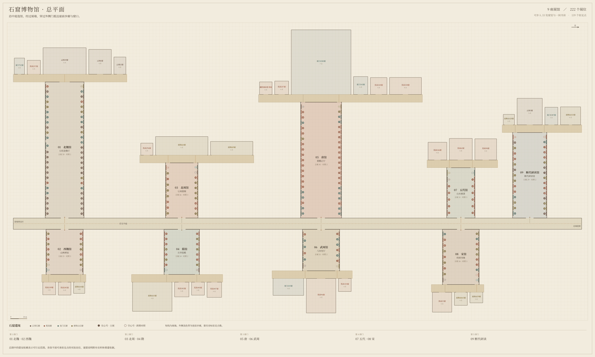
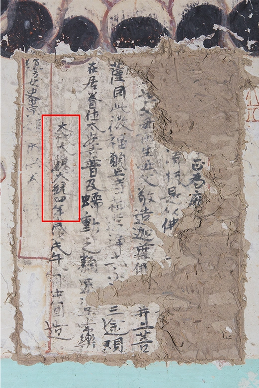

全馆平面与逐件导览
9 座展厅共有 222 个展位，陈列 201 项主展，另设 21 处跨期对照。穿过展厅外门，还能步入 33 处窟室与一间双卷书房，沿 139 个驻足点读故事。
主展类型 ／ 洞窟与龛像 151 · 馆藏文物 22 · 建筑遗存 2 · 建筑遗址 1 · 历史照片 1 · 窟内碑刻 1 · 窟内彩塑 2 · 经书写本 2 · 木刻印本 2 · 绢本设色画 3 · 绢本设色幡画 1 · 洞窟浮雕 1 · 摩崖造像 1 · 门侧造像 1 · 传世铭文 1 · 专题展出文物 1 · 洞窟壁画 8

展馆 01 · 386—534年
北魏馆
51 个展位 ／ 主展 50 对照 1从一尊大佛，到一壁故事
先退几步看大像怎样占据山壁，再走近看衣上的小佛，最后沿壁画寻找九色鹿。
巨像、塔柱与叙事长壁 ／ 本馆资料 ↗
展馆平面 · 石柱造像厅
从南端前厅向北，到第1排门转向西侧。隔廊正对西魏馆。 巨像与石柱之间留出长视距，走近外墙可看云冈第20窟局部扫描。
展厅东西 82.1 米，南北 23.37 米。面向中庭的门净宽 4.8 米。
北向上。彩色圆点通往展墙图版，窟室内的金色小号通往驻足点故事。窄屏可左右滑动。
走出展厅，沿崖入窟
从展厅外侧的门进入步廊。本翼可步入 5 处空间，设 19 个驻足点。
云冈石窟 · 第20窟 ／ 北魏 · 昙曜五窟露天大佛
原窟坐北朝南。面向大像，东侧在右。
露天崖前 · 局部摄影测量 ／ 原址局部摄影测量与实拍照片
进入窟室 →
- 驻足点 01
右肩与翻卷的衣缘
主佛右肩袒露，另一肩上的法衣翻出一道宽衣缘。顺着斜向的衣褶，目光会从肩颈落到腹前。若要看石面的起伏，可以在「看原物」中旋转第20窟的局部扫描。
- 驻足点 02
留下来的东侧立佛
在崖前的照片里，中央坐佛旁还留着东侧的立佛。原来的三佛组合有两侧相应的造像。如今其中一侧缺失，剩下的坐像和立像仍让人想见最初的排列。
- 驻足点 03
为什么佛像直接面对天空
照片里，主佛上方的岩石露出参差的边缘。它原先坐在洞室内部。南壁后来坍塌，佛面的背景才从窟顶变成了天空。沿岩缘辨认断口，就能把一尊露天大佛放回洞窟的历史中。
罗迪 · 云冈第20窟局部摄影测量模型（CC BY 4.0） ↗ 云冈研究院等 ·《云冈石窟全集》图录选展 ↗
云冈石窟 · 第6窟 ／ 北魏 · 中期绕塔读佛传
原窟入口在南，中心塔柱的南面朝向入口，东面位于观者右侧。
方形塔柱窟 · 四面环行 ／ 本窟收录 1 幅实物或历史图版
进入窟室 →
- 驻足点 01
南面先看坐佛与双层大龛
云冈第六窟的塔柱下层分四面开龛。南面是坐佛，东面换成交脚菩萨。礼拜者绕到柱子的另一边，先遇见相似的龛口，接着才看到不同的坐姿。
- 驻足点 02
东面交脚菩萨的双膝
据云冈石窟图录，塔柱东面龛里的菩萨两脚交叠。斜向的双腿横在方座前，与南龛坐佛端正的姿势相互对照。原窟把两种姿态分别安排在塔柱相邻的刻面上。
- 驻足点 03
石塔檐下也有椽头
原窟塔柱的上下两层之间刻有檐口。石匠从岩石中凿出瓦垄、椽头和横向伸出的檐边，让沉重的石塔具有木建筑的层次。连续的檐线越过转角，将相邻两面的龛像连在一起。
- 驻足点 04
绕到西面读太子诞生
图像索引将太子出生后的几幕记在塔柱西面。腋下诞生、行七步而脚下生莲、九龙灌顶，各占一块小刻面。一个故事在石头上有了先后，要沿着塔面一段一段地读。
云冈研究院等 ·《云冈石窟全集》图录选展 ↗ 山西大学云冈学文献知识库 · 第6窟图像位置 ↗
云冈石窟 · 第12窟 ／ 北魏 · 中期凝在石上的乐队
云冈第12窟原址南面为入口，前室北壁设明窗和通向后室的窟门。
前后室佛殿窟 · 石刻伎乐与仿木构 ／ 本窟收录 5 幅实物或历史图版
进入体验 →
- 驻足点 01
抬头辨认莲花平棊
前室顶心有一格一格的平棊。圆瓣莲花与格边的飞天沿顶面铺开，再向下与北壁的天宫乐伎相接。先沿一道横梁看相邻两格，再转向高处正壁，能读出从窟顶转入乐列的层次。
- 驻足点 02
十四个尖拱里的乐队
北壁上层由十四个相邻的小尖拱组成，各坐一身乐伎。衣袖下面露出的手与乐器相接。沿拱口逐个找，有人抱持弦乐器，有人把吹管举到口边。同在一列，身体与双手的朝向各不相同。
- 驻足点 03
明窗边正在奏乐的人
从上方列龛往下看，明窗斜边上的乐伎改变了姿态，有人屈膝，有人侧首。研究者在三条斜边上辨出十七身乐伎。师傅把演奏的人刻进窗的边界，留出中间的采光开口。
- 驻足点 04
侧壁上的石造殿檐
原址照片中，坐佛上方挑出一道石檐。沿檐往下，是横枋、斗拱和立柱。不同方向的构件把上下几层龛像隔开，也让一整面石壁呈现出殿堂的层次。
赵昆雨、贾争慧 · 云冈石窟乐器图像再识 ↗ 湖北美术学院图书馆 · 云冈石窟艺术展 ↗ Patrick20242023 · 第12窟前室窟顶实摄及许可 ↗
龙门石窟 · 第712窟 ／ 北魏莲花洞的倒垂莲花
莲花洞原址由东侧入窟，正壁在西。立佛位于中轴前端，莲花刻在头顶。
穹窿顶石窟 · 倒垂莲花高浮雕 ／ 本窟收录 3 幅实物或历史图版
进入体验 →
- 驻足点 01
花心为什么垂在头顶
在窟顶原址照片中，花心的莲子和围着它展开的花瓣仍可分辨。石匠将周围岩面向后剔去，把一个厚实的花盘留在顶部。沿莲瓣外缘看，能辨出这朵花向下突出的轮廓。
- 驻足点 02
瓣缘之间的明暗交界
照片里，一圈莲瓣的亮边紧挨着下一圈的暗部。花瓣层层向外伸出，遮住相邻部分的光线。顺着照片里已有的明暗交界，可以分清相叠的顺序，也能找到尖端翻卷或残损的位置。
- 驻足点 03
南北两侧的飞天
考察记录把飞天分列在莲花南、北两侧，每侧三身，方向朝向西壁主尊。居中的莲花向下突出，飞天却横向飞行。二者共同将礼拜者头顶的空间与前方佛像联系起来。
- 驻足点 04
与窟顶相对的立佛
西壁照片里，居中的释迦牟尼和两旁的弟子、菩萨都是立姿。主像袈裟的线条垂向脚边。原窟中，这组向下延伸的身形与头顶向四周张开的莲花同处一个空间。
龙门石窟研究院 · 莲花洞 ↗ 西安美术学院 · 莲花洞现场考察 ↗ Gary Todd · 莲花洞窟顶实摄及 CC0 说明 ↗
主展类型 ／ 洞窟与龛像 34 · 馆藏文物 12 · 窟内碑刻 1 · 窟内彩塑 1 · 洞窟浮雕 1 · 洞窟壁画 1
各遗址主展＋对照 ／ 云冈石窟 25＋0 ／ 莫高窟 4＋0 ／ 龙门石窟 14＋0 ／ 麦积山石窟 7＋1
从整面崖壁到一件袈裟，你先缩短了观看距离；抬头看格顶、转身绕塔柱，再沿长壁读九色鹿时，作品还在引导你改变方向。
回到总平面 ↑展馆 02 · 535—557年
西魏馆
16 个展位 ／ 主展 13 对照 3抬头看山林，低头看面容
先在敦煌的斜顶上辨认神灵，再到麦积山看一尊塑像如何用眼睑和唇角留住视线，最后把这张脸放回崖阁的尺度。
窟顶神灵与垂目佛像 ／ 本馆资料 ↗
展馆平面 · 山林禅室
从南端前厅向北，到第1排门转向东侧。隔廊正对北魏馆。 方室向上收作四披覆斗，侧窗的光落在讲述山林与神灵的壁画上。
展厅东西 27.2 米，南北 22.35 米。面向中庭的门净宽 4.8 米。
北向上。彩色圆点通往展墙图版，窟室内的金色小号通往驻足点故事。窄屏可左右滑动。
走出展厅，沿崖入窟
从展厅外侧的门进入步廊。本翼可步入 3 处空间，设 11 个驻足点。
麦积山石窟 · 第44窟 ／ 西魏垂目而笑的西魏佛像
原窟前部已经坍失，幸存的圆拱龛位于正壁。
佛龛 ／ 本窟收录 1 幅实物或历史图版
进入窟室 →
- 驻足点 01
低眼睑与唇角
研究所的第44窟照片中，坐佛略俯着头，细长的眼睑向下收，嘴角微微内含。三个极轻的曲线相互配合，形成这尊西魏佛像安静的表情。
- 驻足点 02
垂在座前的悬裳
考察记录对这尊坐佛的衣着写得很细。内衣的边缘带有颜色，外层袈裟的两道领口向下垂，衣裾在膝头翻折，铺到座前。「褒衣博带」这四个字，说的正是衣料宽博、层层叠落的形态。
- 驻足点 03
龛外两身胁侍
窟志把两位菩萨记在圆拱龛外。她们略微朝向主佛，身上有宝冠、披发，手边出现莲花与净瓶。侍立者朝里的姿势，使龛内主尊与龛外的人物构成一组。
- 驻足点 04
残窟与两种侧壁复原
原窟前部已经塌毁。正壁的小龛和拱口仍有实物可辨，侧壁原来怎样布置却有两种解释，有人认为也设了佛龛，有人认为只有台座。两种复原意见都来自对残存边缘的观察。
麦积山石窟艺术研究所 · 第44窟造像图录 ↗ 刘丹 · 麦积山石窟残损洞窟的复原研究 ↗
主展类型 ／ 洞窟与龛像 12 · 洞窟壁画 1
各遗址主展＋对照 ／ 云冈石窟 0＋1 ／ 莫高窟 6＋0 ／ 龙门石窟 0＋1 ／ 麦积山石窟 7＋1
第 1 章 · 11 个展位山林与窟顶
斜顶上有一座山林 沿窟顶从人物移向山形和飞行的身影。画师用四片斜面包住观者，使景物延伸到视野之外。

展位 01 · 北墙 ／ 主展 ／ 莫高窟 · 第285窟窟顶的神灵与山林西魏西魏莫高窟以满绘的窟顶和壁面组织神灵、山林与禅修空间。
看展图与资料 →展品细读
墙里打坐，画里也打坐
南、北壁各凿四间小禅室，适合人独自入内。抬头看窟顶四披的下缘，画中还有三十六身禅僧，分坐在山林和草庐间。真实的小室和画中的山居互相呼应，今天窟心的方坛则是元代添建的。
数字敦煌 · 第285窟 ↗ 展位 03 · 北墙 ／ 主展 ／ 莫高窟 · 第249窟阿修罗托起日月北魏晚期至西魏研究院列入西魏，数字敦煌将营造范围写为北魏晚至西魏初。
看展图与资料 →展品细读
巨人脚下的一家野猪
窟顶上方，阿修罗的身形与须弥山相较。把视线降到北披下部，能找到一头大野猪领着六头小猪觅食。几个小身体贴着山地铺开，与上方的巨人形成尺度上的落差，天与地也随之分开。
敦煌研究院 · 逐窟图录 ↗ 展位 04 · 南墙 ／ 主展 ／ 莫高窟 · 第288窟西魏塔柱窟里的天宫栏槛西魏敦煌研究院窟志将第288窟的营造归为西魏。
看展图与资料 → 展位 06 · 南墙 ／ 主展 ／ 麦积山石窟 · 第123窟童男与童女的衣冠西魏据魏文斌的麦积山西魏窟群分期。
看展图与资料 →第123窟修复壁面。A处白色霉斑沿不平的表层生长，B处可见颜色较深的痕迹。童男、童女的原址近照收在数字敦煌。
展位 07 · 北墙 ／ 主展 ／ 麦积山石窟 · 第102窟两壁之间的问疾西魏据魏文斌所列西魏洞窟与问疾题材。
看展图与资料 →莫高窟 · 第103窟《隔着窟门的问疾》。第103窟东壁维摩诘，出自苏立文《中国艺术史》1999年版图版 在第103窟壁画辨认维摩诘，再对照麦积山第102窟将问疾双方放到相对两壁的方式。
展位 08 · 南墙 ／ 主展 ／ 莫高窟 · 第285窟 · 东壁门南双龙华盖下的无量寿佛西魏，局部宋绘西魏，局部宋绘
看展图与资料 →陈万里拍到第285窟西壁北侧佛背光上方的飞天，弯月般的飘带绕过身体。东壁门南的无量寿佛与双龙华盖见另附原图。
展品细读
看这件原物
入口南侧，画师将无量寿佛安置在双龙华盖之下。说法的佛、持花的弟子和下方的供养人共用一面墙。后来这里又添画了宋代供养人，局部脱落使下层西魏壁画重新露出。
数字丝绸之路 · 伯希和图录考释 ↗从哪里看起
从画面上方逐层下看，先找华盖与坐佛，再找到身量明显变小的供养人。观察长袍的垂裾和下方衣裙的折线。
数字丝绸之路 · 伯希和图录考释 ↗ 展位 09 · 北墙 ／ 主展 ／ 莫高窟 · 第285窟 · 北壁禅室之间两间禅室之间的一束花西魏西魏
看展图与资料 →展品细读
看这件原物
两间禅室的拱形开口把墙面挤成上窄下宽的形状。画师在上方安排一身坐佛，下方让两位持花菩萨相向而立。衣袖和花束之间的小空隙，让重复排列的供养像有了相互呼应的姿态。
数字丝绸之路 · 伯希和图录考释 ↗从哪里看起
先看照片两侧向上弯曲的龛边，再找中间两位人物托着的鲜花。两人的脸朝向彼此，头顶的坐佛却面向观看者。
数字丝绸之路 · 伯希和图录考释 ↗ 展位 11 · 北墙 ／ 主展 ／ 麦积山石窟 · 第60窟小龛中的冠与手西魏 · 胁侍菩萨近看西魏小龛内一身可辨冠式与手势的胁侍。
看展图与资料 →麦积山石窟 · 第4窟第四龛《围在坐佛两侧的立像》。第四龛南侧立像。图1E中可见层层下垂的衣褶与胸前手势。 先看七佛阁第四龛南侧菩萨怎样把手置于胸前，再到第60窟辨认头冠和手的位置。
展品细读
观看实物
菩萨抬起一手，指尖与胸口相近，高冠则拉长了整尊像的轮廓。冠后的暗色与脸颊上的亮面把人物从龛壁中托出。
项一峰 · 麦积山石窟内容总录 ↗造像与营建
西崖大佛下方的第60窟很小，窟志著录龛深约六十三厘米。佛与胁侍都塑在这处浅龛里，近照把菩萨的冠式和手势单独留了下来。
项一峰 · 麦积山石窟内容总录 ↗ 展位 12 · 南墙 ／ 主展 ／ 莫高窟 · 第285窟 · 飞天壁画相随飞行的两身天人西魏西魏
看展图与资料 →展品细读
从哪里看起
两身浅色天人一高一低，屈身回臂。白色与浅青色衣带沿斜线向上伸展，把两道身影连成一道飞行的轨迹。先从左下方的天人沿飘带看到右上方的面孔，再找两人身后反折的衣褶。浅色衣带交错在深色地上，飞动的方向因此格外清楚。
本件图版与署名 ↗画里的故事
第285窟有写于538年和539年的两条发愿文。禅室门边有供养者，窟顶和壁面上方则布置了飞天。画师借悬空的人物让人从现实中开凿的禅室，一路抬头看到天界。
敦煌研究院 · 莫高窟第285窟 ↗ 展位 13 · 北墙 ／ 主展 ／ 麦积山石窟 · 第28、30窟衣缘下方的两片壁色初建分期有争议，历代重修依孙晓峰的营建分期归入西魏；图版记录现代调查时的壁面，颜料年代未逐层确定。
看展图与资料 →展品细读
沿衣缘往下看
曲线勾出的衣褶到了下摆便停住，底下露出一大片浅色壁面。蓝色箭头指向两处发白的痕迹。翻到另一张照片，深色斑块聚在墙脚，旁边的色标只有手掌大小。
孙晓峰 · 麦积山石窟的历史与艺术 ↗两座相邻的崖阁
第28、30窟都在东崖，前面开廊，廊后各有三龛。孙晓峰将它们列入西魏，地方志记作北魏；另有研究按东崖各窟的上下层位，提出了隋代营造的解释。两窟经历多次重修，这组近照记录了今日壁面的保存状态。
孙晓峰 · 麦积山石窟的历史与艺术 ↗
第 2 章 · 2 个展位临近面容
微笑落在什么地方 从高处收回目光。沿解读图的眼睑和口角读这张脸，留意一点弧度怎样改变整张面孔的神情。
展位 02 · 南墙 ／ 主展 ／ 麦积山石窟 · 第44窟垂目而笑的西魏佛像西魏西魏彩塑以细微的眼睑与嘴角刻画主佛表情；原图见研究所图录。
看展图与资料 →第44窟壁面近照。研究者从左到右圈出裂纹、空鼓和变色。正壁主佛的面部可在外部原址照片中观看。
展位 15 · 北墙 ／ 跨期对照 ／ 云冈石窟 · 第18窟袈裟上的化佛北魏 · 昙曜五窟回看北魏石雕衣纹与化佛，比较体量、材料怎样影响观看距离。
看展图与资料 →展品细读
衣襟翻面，还有另一层人物
主尊肩上的一列列小坐佛各坐莲台，朝着大佛。再看胸前翻起的一道宽衣缘，折带的里侧刻着坐在长茎莲花上的化生童子。同是指头大小的人像，所在的衣面、姿态和朝向却都不同。
云冈石窟研究院、北京大学考古文博学院等 · 云冈石窟艺术展 ↗
第 3 章 · 3 个展位从塑像回到崖阁
再走到窟门外 把视线从第44窟的面容移到相邻崖面的第43窟。先分清崖阁内外，再对照资料中分属不同时期的营造痕迹。
展位 05 · 北墙 ／ 主展 ／ 麦积山石窟 · 第43窟窟门内外的两次营造西魏开凿 · 宋代重塑以西魏窟室为展线起点，同时记录宋塑和寝陵传说。
看展图与资料 →麦积山石窟 · 第4窟廊端《藏在力士身后的支撑》。第4窟长廊端部的金刚力士。红色躯干前缠着帔帛，屈起的一臂高过头顶。 从第4窟廊端的金刚力士看守护者所站的位置，再看第43窟前廊的两身力士。
展位 14 · 南墙 ／ 跨期对照 ／ 麦积山石窟 · 第4窟散花楼的七间佛阁北周第4窟崖阁开凿于北周，龛中造像历经重修。以这张现状图对读第44窟，观察人物在龛内怎样排列。
看展图与资料 →展品细读
七间佛阁的门面背后
从栈道上远望，前面是带柱的长廊，越过柱列，后面才是七座帐形大龛。向上看，瓦垄、正脊与斗拱把山崖做成殿堂屋顶。走近到能看见飞天脸上薄泥层时，再回想这层廊檐，人像与建筑就有了各自的观看距离。
国家民委 · 麦积山石窟的历史与艺术 ↗ 展位 16 · 南墙 ／ 跨期对照 ／ 龙门石窟 · 第712窟莲花洞的倒垂莲花北魏以北魏龙门窟顶的立体莲花，对读西魏莫高窟顶铺展的彩绘空间。
看展图与资料 →展品细读
一朵花怎样让飞天动起来
正中的莲花被刻成高浮雕，花瓣低垂，侧面的轮廓能投下阴影。周围的飞天以长裙和细腰排开，绕开这团厚实的中心。把目光沿花瓣向外送到飞天的衣带，就会感觉到静止的石顶也有一股回旋的力量。
河南省政府门户 · 龙门石窟分窟介绍 ↗
壁画把空间推远，泥塑把目光收回脸上，窟门又把你带回整片崖壁。三次改变观看距离，同一时代的不同材料就显现出来。
回到总平面 ↑展馆 03 · 557—581年
北周馆
19 个展位 ／ 主展 16 对照 3把一座殿堂刻上悬崖
沿麦积山崖面横走，从一间龛看向七间阁，再去敦煌画壁上找营造殿塔的人。
崖阁、柱列与并置佛龛 ／ 本馆资料 ↗
展馆平面 · 七间崖阁
从南端前厅向北，到第2排门转向西侧。隔廊正对隋馆。 木柱分出七间，沿檐下长凳看麦积山崖阁的柱列与造像。
展厅东西 33.3 米，南北 19.56 米。面向中庭的门净宽 4.8 米。
北向上。彩色圆点通往展墙图版，窟室内的金色小号通往驻足点故事。窄屏可左右滑动。
走出展厅，沿崖入窟
从展厅外侧的门进入步廊。本翼可步入 3 处空间，设 13 个驻足点。
麦积山石窟 · 第4窟 ／ 北周散花楼的七间佛阁
上七佛阁位于东崖上层，七座帐龛沿原址前廊横向排列。
窟前建筑 ／ 本窟收录 2 幅实物或历史图版
进入窟室 →
- 驻足点 01
残留的角柱
北周的第4窟原有八根柱，将前廊分作七间。地方志记载，前檐与多数柱子已经崩失，两端角柱仍有大斗和莲瓣柱础。七座帐龛留在后壁，和残存的角柱一起，为早先的开间数提供了线索。
- 驻足点 02
飞天的脸怎样离开壁面
廊后壁上方原有七幅飞天。按总录，前五幅的脸、胳膊和脚用细泥浅浅塑起，衣裙、披帛和乐器则画在壁面上。一个人物的一只手由泥塑出，手中的乐器却由画笔接下去，这是薄肉塑精巧的地方。
- 驻足点 03
石龛里的帐杆
窟志记七龛四角有仿木的帐杆、帐柱和帐楣。每个龛的顶部朝中央收拢，正中还有莲花。在一条很长的崖廊后面，这七座较小的帐形空间各自为一组造像留出了位置。
- 驻足点 04
马骑与人物的廊顶残片
这张原址照片拍到廊顶平棋的破碎边缘。细看残存色块，可以辨认马匹与人物。廊顶曾画出行等题材，资料尚不足以确定照片拍的是第几间。
- 驻足点 05
莲座托起的角柱
角柱上端的大斗、承托横枋的斗与伸向前檐的椽头，表现北周工匠把木构件转写成山崖构造的做法。廊前缘残损较大，构件在两端较易辨认。
麦积区志下卷 · 石窟篇 ↗ 魏文斌 · 东崖阁式建筑与薄肉塑飞天 ↗ Shizhao · 第4窟廊顶残片摄影，CC BY-SA 3.0 ↗
麦积山石窟 · 第9窟 ／ 北周开凿，宋、明、清重修中七佛阁的横向礼拜空间
原址栈阁旁的后壁并列七个圆拱落地龛。
殿堂窟 ／ 本窟收录 1 幅实物或历史图版
进入窟室 →
- 驻足点 01
七个落地的圆拱龛
原址七座龛从廊面向里开出，平面近似马蹄形。窟志记第一龛高约三点七米，宽约三米，深约两米。前六龛体量相近，第七龛稍小，沿崖的排列因而有节奏，也有变化。
- 驻足点 02
第四龛左侧的迦叶
地方志把这身弟子塑像记为清代。皱起的眉头、收紧的嘴和合在胸前的双手刻画年老的修行者。北周龛室保存着后世不同的塑像面貌。
- 驻足点 03
偶数龛的迦楼罗
第一、三、五、七龛顶绘宝盖，第二、四、六龛顶则绘迦楼罗。第四龛的图像有鸟嘴、双翼和向两侧展开的手臂。同样的龛口之上，画工交替安排了两种不同的天顶。
- 驻足点 04
今天脚旁的重建栈阁
旧栈阁毁损后，1980年的加固工程按原有开间用钢筋混凝土重建。上下对应的挑梁之间立圆柱，棕红色门窗与浅灰色栏板属于现状中的不同材料。
麦积区志下卷 · 石窟篇 ↗ Shizhao · 第9窟彩塑资料照，CC BY-SA 3.0 ↗
莫高窟 · 第296窟 ／ 北周修桥、掘井也能积福
原窟由东向西进入；面对西壁时，南在左、北在右。
本生与福田经变窟 ／ 本窟以考察记录展出
进入窟室 →
- 驻足点 01
架桥、掘井和种树
北披的福田经变把积福画成许多人的日常劳动。有人和泥砌塔，有人为行路人架桥、掘井。敦煌研究院的分题图版分别介绍了这些工序；本窟另有一段得眼林故事，属于另一幅画。
- 驻足点 02
一佛、二弟子、二菩萨
西壁圆券龛内五尊彩塑的主像为倚坐说法佛，身旁各有一位弟子和一位菩萨。倚坐可见于不同题材，研究院对这位主尊究竟是弥勒还是释迦保留了讨论。
- 驻足点 03
须阇提与流亡的一家
北壁讲须阇提太子随父母逃难的故事。队伍走错路、陷入饥饿，太子愿意牺牲自己救父母。画家借连环场景交代人物遭遇，这与上方北披画现实善行的福田经变属于不同题材。
- 驻足点 04
南壁的得眼林
窟志将得眼林故事记在南壁，从西向东展开；早期图版对壁向另有著录。故事中的人先遭遇苦难，后来眼睛重见光明。佛与听众周围连续出现的许多人物，分别对应这段故事中的不同时间。
敦煌研究院 · 莫高窟第296窟 ↗
主展类型 ／ 洞窟与龛像 14 · 洞窟壁画 2
各遗址主展＋对照 ／ 云冈石窟 0＋1 ／ 莫高窟 6＋1 ／ 龙门石窟 0＋1 ／ 麦积山石窟 10＋0
第 1 章 · 11 个展位一间殿阁的构造
从一间数到七间 先认柱与柱之间的一间，再把眼前龛内的像放回整座七间崖阁。现状照片也留下后世重塑的面貌。
展位 01 · 北墙 ／ 主展 ／ 麦积山石窟 · 第4窟散花楼的七间佛阁北周北周七间八柱的上七佛阁仿照殿堂，檐下飞天结合浅浮塑和彩绘。照片展示一龛内历经重修的现状。
看展图与资料 →展品细读
七间佛阁的门面背后
从栈道上远望，前面是带柱的长廊，越过柱列，后面才是七座帐形大龛。向上看，瓦垄、正脊与斗拱把山崖做成殿堂屋顶。走近到能看见飞天脸上薄泥层时，再回想这层廊檐，人像与建筑就有了各自的观看距离。
国家民委 · 麦积山石窟的历史与艺术 ↗ 展位 03 · 北墙 ／ 主展 ／ 莫高窟 · 第290窟沿着两披展开的佛传长卷北周敦煌研究院窟志将第290窟的营造归为北周。
看展图与资料 →展品细读
抬头怎样读一幅长卷
佛传沿窟顶斜面横向展开，画面以白地衬托人物，每段还有一方榜题。先找榜题框，再找同一主角下一次出现的位置，连续叙事便有了停顿。看不清字迹时，题框的位置仍能提示情节的分段。
敦煌研究院 · 逐窟图录 ↗ 展位 05 · 北墙 ／ 主展 ／ 莫高窟 · 第301窟跨过窟顶的舍身饲虎北周数字敦煌窟志将第301窟的营造归为北周。
看展图与资料 →第301窟抱拨弦乐器的飞天局部。图中是同窟伎乐；舍身饲虎的叙事分布在南披与东披。
进入数字敦煌全景 ↗ 展位 06 · 南墙 ／ 主展 ／ 莫高窟 · 第428窟门两边的两位太子北周敦煌研究院窟志将第428窟的营造归为北周。
看展图与资料 →展品细读
在门边顺着折回的路线读
东壁门南的萨埵太子故事从上往下折返，以横排相接的情节串起舍身饲虎的经过。门北则画另一位太子广行布施。站在门内先辨清南北，再找每一排转向的地方，两个都讲施舍的本生故事就不会混作一篇。
敦煌研究院 · 逐窟图录 ↗ 展位 11 · 北墙 ／ 主展 ／ 麦积山石窟 · 第26窟佛座下的乐伎飞天北周用佛座正面的浮塑补足北周馆的乐舞造像。
看展图与资料 →莫高窟 · 第428窟 · 中心塔柱《北周塔柱上的琵琶手》。第428窟中心塔柱伎乐图局部。乐伎横抱琵琶，两手分别落在琴颈与面板上。 第428窟把乐伎画在塔柱上，第26窟把乐伎安置在佛座下，先辨手中乐器，再比较位置。
展品细读
观看实物
人物浮起在左壁佛座的正面。飘带拉出弧线，肩头和头部因浮雕的高低接住光线；投到座上的两道阴影还遮住了部分细节。
上海音乐学院 · 麦积山实地考察 ↗造像与营建
第26窟两侧佛座下共见四身乐伎，考察者辨认出腰鼓与排箫。仰望窟顶看涅槃故事之后，还可以把目光放低，找这些藏在座边的演奏者。
上海音乐学院 · 麦积山实地考察 ↗ 展位 12 · 南墙 ／ 主展 ／ 麦积山石窟 · 第27窟斜顶上听法的人群北周 · 法华经变用同窟两幅人物壁画近照展示北周经变画的叙事。
看展图与资料 →麦积山石窟 · 第127窟《帐顶上的睒子故事》。第127窟帐顶前披的睒子本生，麦积山石窟艺术研究所提供图版 在第127窟的帐顶画里辨山林、人物和建筑，再去第27窟寻找斜顶上朝向一致的听众。
展品细读
观看实物
近照中，树枝、屋檐和圆形头光仍能逐一辨认。人物有些只余轮廓，画工用方向一致的面孔把分散的人群聚成一场听法。
上海音乐学院 · 麦积山实地考察 ↗造像与营建
与第26窟相邻的第27窟，在窟顶北披描绘《法华经》故事。考察记录指出其中有释迦、多宝二佛并坐和两侧听众。两幅原址摄影留下壁画的局部，可逐层细看。
上海音乐学院 · 麦积山实地考察 ↗ 展位 13 · 北墙 ／ 主展 ／ 麦积山石窟 · 第4窟 · 龛铭庾信写下的七佛龛北周撰文 · 明代重刻以北周原文归入北周馆，标明重刻年代与现代展场摄影。
看展图与资料 →展品细读
观看实物
纸上白字自右向左排成直行。最右一行标出“秦州天水郡麦积崖佛龛铭并序”，移向中间便能读到“七佛龛”；断裂处的纸墨也留下了石面的形状。
天水市麦积区地方志编纂委员会 · 麦积区志 ↗造像与营建
庾信在北周为这座七佛龛撰写铭序，记下发愿和营造的缘由。地方志著录的明嘉靖四十三年重刻本作于1564年。展厅里所见是拓片在现代展览中的照片，文字的撰写、石上的重刻和今天的观看各有时间。
天水市麦积区地方志编纂委员会 · 麦积区志 ↗ 展位 14 · 南墙 ／ 主展 ／ 莫高窟 · 第299窟 · 窟顶南披让长琴斜过身前的伎乐天北周北周
看展图与资料 →展品细读
从哪里看起
深色长琴斜架在肩前，乐伎的双手一高一低。乐器需要安稳地托住，画师却让人物像在空中漂行。从高举的一端向下看，找到另一只按在琴身上的手。前后两手的距离，透露出这件乐器的长度。
本件图版与署名 ↗画里的故事
第299窟的主室为覆斗顶。南披既安排了萨埵太子本生，又画天宫伎乐；相邻几披还有睒子故事。仰视时，正在抚琴的天人和曲折展开的故事画分享同一方窟顶。
敦煌研究院 · 莫高窟第299窟 ↗ 展位 18 · 南墙 ／ 跨期对照 ／ 莫高窟 · 第217窟池上楼阁初、盛唐之交壁画中的楼阁、平台与池水，提供唐代画面构筑建筑空间的例子。
看展图与资料 →展品细读
从一面墙转到另一面，故事也换了
北壁以净土为中心，西侧和下部讲国王被囚一家的故事，东侧画十六观。南壁的经变题材有不同解释，数字敦煌采用佛顶尊胜陀罗尼经变之说。对照旧照和全景时先辨南北，才不会把两墙的资料接成同一幅画。
数字敦煌 · 第217窟北壁 ↗ 展位 19 · 北墙 ／ 跨期对照 ／ 龙门石窟 · 第140窟宾阳中洞的华盖北魏 · 500至523年北魏宾阳中洞把华盖与足下莲池配成一体，可与北周前廊的视线安排对照。
看展图与资料 →展品细读
把一棵树放回墙角
如今单独陈列在纽约的皇帝礼佛图原在宾阳中洞东北方。图中的树标出队伍从北壁转向东壁的地方。上方另有护法，下方是辩论场面。古人入窟时所见的礼佛行列，曾经与上下层的雕刻、两面墙的转折连在一起。
大都会艺术博物馆 · 孝文帝礼佛浮雕 ↗
第 2 章 · 6 个展位各龛与礼拜者
并排的龛怎样看 沿横向空间想象视线从一龛转到另一龛。重复的开间把分开的造像连成一段礼拜路径。
展位 02 · 南墙 ／ 主展 ／ 麦积山石窟 · 第9窟中七佛阁的横向礼拜空间北周开凿，宋、明、清重修主展取北周开凿的横向崖阁布局。龛内景物历经宋、明、清重修，照片展示其中一身塑像。
看展图与资料 →在来源处看高清原图 ↗ 展位 07 · 北墙 ／ 主展 ／ 麦积山石窟 · 第31窟十方佛的小殿堂北周 · 明清重绘背光研究所调查将窟龛与正壁影塑定在北周，彩绘可见后世重修。
看展图与资料 →麦积山石窟 · 第13窟《沿栈道望东崖大佛》。栈道一侧所见第13窟东崖大佛 第31窟位于东崖大佛下方。先从大佛和栈道看崖面尺度，再看仅宽93厘米的小龛。
展品细读
九十厘米高的小殿
调查者量得整窟高约九十厘米，进深只有四十厘米，里面却做出了屋脊、鸱尾和佛坛。十身坐佛分成上下两排，每身约二十七厘米高。左右壁原贴四身立侍，今天只余右下的一身，其余位置要靠粘贴痕迹来认。
孙晓峰、赵东晓、李鹏飞 · 第31窟的调查与研究 ↗其他作品对照 ·
颐园居 ↗ · CC BY-SA 4.0
展位 08 · 南墙 ／ 主展 ／ 麦积山石窟 · 第48窟护法短裙里的两次绿色北周窟 · 后期覆彩北周是洞窟分期；两次施绿之间的具体年代尚未确定。
看展图与资料 →展品细读
绿色为什么隔着一层白
研究人员在护法外翻短裙上取了一个微小样本。横截面让原来叠在一起的绿色和白色底层从侧面显现，研究者据此讨论先后重妆的可能。正看衣纹能回答颜色在哪里，侧看截面才看得出它们谁压在谁上面。
原检测论文 · 麦积山蓝绿色颜料的成分与层次 ↗ 展位 09 · 北墙 ／ 主展 ／ 麦积山石窟 · 第197窟王子洞里的低坛与坐佛北周第197窟保有可用于北周分期的佛像。
看展图与资料 →王子洞的方台与窟室。窟室宽2.75米、深2.10米、高2.20米。左壁龛前的台座高0.33米，本图仅表现空间与台座。顶面折线示意攒尖形式。
展品细读
为什么同一篇调查里给坐佛单独画图
第197窟与相邻第198窟相距约四十二米，自成一处。靠左壁有土坯砌出的方台，上面留着结跏趺坐的佛，沿地面四周还有低坛基。由这三处位置读调查图，能把孤立的一身坐佛放回当时可以进入的室内。
麦积山石窟艺术研究所 · 王子洞窟区调查简报 ↗ 展位 10 · 南墙 ／ 主展 ／ 麦积山石窟 · 第202窟一间窄小的后禅室北周说 · 王子洞窟区研究所据窟形及禅观特点推断北周，未见纪年。
看展图与资料 →前室与后禅室。前室宽1.72米、深1.54米、高1.63米。后室宽0.88米、深1.13米、高1.10米。顶面折线分别标示攒尖顶与券顶，地面以水平参照面示意。
展品细读
在后室能不能直起身
前室顶高约1.63米，进入后室就只剩约1.10米高，宽也收窄到约0.88米。调查时未见造像和壁画。即使没有题记告诉我们谁曾在这里坐过，这组尺寸也说明进出和停留需要采取怎样的身体姿势。
麦积山石窟艺术研究所 · 王子洞窟区调查简报 ↗ 展位 16 · 南墙 ／ 主展 ／ 麦积山石窟 · 第4窟第四龛围在坐佛两侧的立像北周建阁，后世重修以北周崖阁的第四龛展示多面观看方式，现状包含后世重修。
看展图与资料 →展品细读
走进七龛正中
沿上七佛阁数到第四龛，中间的坐佛垂目向前。换看两侧，站立的菩萨挽起头发，手臂绕着帔帛。把正中和两侧的照片连起来，才能体会一龛人物环绕主尊的安排。
Duan 等 · 上七佛阁第四龛现场图1 ↗同一屋檐下的不同表面
第四龛位于北周开建的崖阁。2017年发表的现场调查分别拍摄主佛和南北两侧的菩萨，比较龛内不同位置的彩层。照片上较暗的面容和粉白的衣裳对应着实际保存状态，圈线是研究者留下的标记。
Duan 等 · 上七佛阁第四龛现场图1 ↗
第 3 章 · 2 个展位工匠与画里的日常
谁在画里造桥建塔 把视线从凿成的崖阁转到画里的施工现场。找出运料、营造的人，再想这些日常动作怎样成为北周敦煌壁画中可以讲述的功德。
展位 04 · 南墙 ／ 主展 ／ 莫高窟 · 第296窟修桥、掘井也能积福北周敦煌研究院窟志将第296窟的营造归为北周。
看展图与资料 →莫高窟 · 第23窟《雨落农田的法华经变》。莫高窟第23窟北壁经变中的山水、人物和建筑 第23窟农田与第296窟架桥、掘井呈现不同劳动场景，可以对读画中人物的动作。
展品细读
六个泥工怎样合造一座塔
故事刚开始，画家就把筑塔工地拆成几种工作。一人和泥，两人砌砖，两人送料，另有一人站在旁边举手指挥。沿着泥料运往塔身的方向读，劳作的先后和六个人的关系便比只数人头清楚得多。
敦煌研究院 · 逐窟图录 ↗ 展位 15 · 北墙 ／ 主展 ／ 莫高窟 · 第428窟 · 中心塔柱北周塔柱上的琵琶手北周北周
看展图与资料 →展品细读
从哪里看起
小幅壁画里，乐伎把琴身抱在胸前，左臂追着长颈伸出，粗重的轮廓从颈部一直勾到右手。先辨认乐器圆下而收窄的外形，再比较琴颈上的手和落在面板旁的手。这张图版将乐器著录为五弦琵琶。
本件图版与署名 ↗画里的故事
第428窟中央有四面开龛的塔柱。转身看塔柱上的小幅伎乐，与回身看洞门南北两铺太子本生，观看的距离和身体姿态都不同。琴手的双手把礼拜空间里本来无声的音乐交代了出来。
敦煌研究院 · 莫高窟第428窟 ↗
看过柱列和横向龛室，再看画中的营造者，便能给眼前建筑补上一个问题：是谁把这些材料变成了可供礼拜的场所？
回到总平面 ↑展馆 04 · 581—618年
隋馆
16 个展位 ／ 主展 14 对照 2跟着礼拜者绕窟一周
从塔柱上一行纪年出发，沿供养菩萨行走的方向转身，再到崖前寻找远观大佛的位置。
纪年题记、环壁与摩崖 ／ 本馆资料 ↗
展馆平面 · 方井绘殿
从南端前厅向北，到第2排门转向东侧。隔廊正对北周馆。 从方厅抬头，层层收束的藻井呼应窟顶与中心塔柱的几何秩序。
展厅东西 27.2 米，南北 21.34 米。面向中庭的门净宽 4.8 米。
北向上。彩色圆点通往展墙图版，窟室内的金色小号通往驻足点故事。窄屏可左右滑动。
走出展厅，沿崖入窟
从展厅外侧的门进入步廊。本翼可步入 4 处空间，设 14 个驻足点。
莫高窟 · 第302窟 ／ 隋塔柱上的开皇纪年
原窟由东向西进入；面对西壁时，南在左、北在右。
须弥山倒塔柱窟 ／ 本窟收录 1 幅实物或历史图版
进入窟室 →
- 驻足点 01
藏在北向面的开皇四年
中心柱北向面的台座底层露出供养人和发愿文。窟志释读出开皇四年，即公元五八四年。年代线索来自靠近座底的一小处墨迹，台座上同时还有龛像和装饰，不能把几层内容混为一处。
- 驻足点 02
方座上倒垂的七层塔
旧照里，两层方座撑起上方的须弥山。到了塔柱上半部，外轮廓由方变圆，朝窟顶逐渐加宽。原窟方座的几面各开龛，照片中的一面只是整根塔柱的一部分。
- 驻足点 03
环壁的乐队
按窟志，四壁高处是天宫伎乐和帷幔，中段绘千佛与说法图，下段还有后代重绘的比丘尼和女供养人。由高至低读下去，可以分辨画面中的天空、佛会和实际礼佛的人。
敦煌研究院 · 莫高窟第302窟 ↗ 数字敦煌 · 第302窟全景与逐壁记录 ↗
莫高窟 · 第401窟 ／ 隋环壁而行的供养菩萨
原窟由东向西进入；面对西壁时，南在左、北在右。
三龛殿堂窟 ／ 本窟收录 1 幅实物或历史图版
进入窟室 →
- 驻足点 01
北壁东侧的供养菩萨
这幅第401窟的壁画局部保留了供养菩萨的面容、衣带和手中花枝。窟志记载，洞窟下部原有一圈姿势各异的供养菩萨。把单身人物放回这一行列，便能理解微倾的头和扬起的衣带怎样打破重复。
- 驻足点 02
向内又退了一层的佛龛
西面的大龛先开一个宽口，里面再退入一层。莲花柱、摩尼珠和边饰把层次划得清楚；龛顶散花飞天与持香炉的飞行比丘，分布在主尊的斜上方。
- 驻足点 03
石绿地上的莲花与飞天
窟志记顶中央为八瓣莲花，花周画有飞天、翼马和凤鸟，井心之外另有联珠纹样。由中央的莲瓣到外缘的珠粒，图案一层层变密，再与四披的千佛相接。
敦煌研究院 · 莫高窟第401窟 ↗ 北壁东段 · 供养菩萨 · 隋代画工 · Public domain ↗
麦积山石窟 · 第13窟 ／ 隋，宋代重修沿栈道望东崖大佛
第13窟的三尊石胎泥塑并列于麦积山东崖崖面。
摩崖造像 ／ 本窟收录 2 幅实物或历史图版
进入窟室 →
- 驻足点 01
额间修复的证据
主佛额间有白毫。1982年修复时，工作人员从这一部位取出题有南宋绍兴二十七年的白瓷碗，又从右脸内发现墨书经卷。外表可见的是佛面，修造年代借助内部遗物得以追索。
- 驻足点 02
向主佛靠拢的胁侍
照片里，主佛两边的立像都戴宝冠，披帛顺着手臂垂下，身体稍朝向中间。两身胁侍高约十三米。文献对三尊的具体名号有不同解释，比较它们的站姿和朝向则可以直接依据原址影像。
- 驻足点 03
泥层下的石胎与桩眼
工匠顺着岩体打出大型石胎，再敷泥塑衣纹和五官。主尊下肢泥层剥蚀处露出石质，崖上还可见供挑梁一类构件插入的孔眼。单靠表面颜色不能判断填补与修整的年代。
- 驻足点 04
从崖下看见天空
早期楼阁曾遮护三尊，后已坍塌。今天栈道让人从侧面贴近，也能退后看到造像从岩面凸出的轮廓。露天光线与仰视角度同样影响面部和衣褶的观感。
麦积区志下卷 · 石窟篇 ↗ 魏文斌 · 东崖阁式建筑与薄肉塑飞天 ↗ Anagoria · 东崖大像现场摄影，CC BY 3.0 ↗
莫高窟 · 第407窟 ／ 隋莲心里共用三只耳的兔子
原窟面向西壁正龛，入口在东，南壁在左，北壁在右。
三兔莲花藻井 · 隋代覆斗顶 ／ 本窟收录 1 幅实物或历史图版
进入体验 →
- 驻足点 01
三只耳朵怎样属于三只兔子
莲心绿色圆环里，三只兔子向同一方向奔跑。先认头部，再沿伸向中心的长耳寻找邻兔。画家把相邻两兔的一耳画在同一个位置，三只耳朵就能让每只兔子都显得长着一双耳朵。
- 驻足点 02
八瓣之外还有一圈飞天
窟志记三兔在莲心内，层层花瓣的外围另有八身飞天。有的捧花，有的执香炉。先辨兔群首尾相接的旋转，再读外围人物各不相同的动作，便能把莲心局部与完整藻井联系起来。
- 驻足点 03
从方井沿幔脚看向四披
这座隋窟的井心为方形，四披从方井向墙面斜落。窟志记载，垂角幔帷铺在斜面上，旁边画满千佛。幔脚顺着顶面下垂，使整座岩窟具有张挂帐幕的感觉。
- 驻足点 04
正壁的龛口还有第二层
西壁开方口双层龛。由外层向内看，龛楣、龛顶和塑像有前后层次。著录中的龛内塑像保留隋代作品，也经历清代重修；南北壁下部的供养人又有宋代绘制的部分。
敦煌研究院 · 三兔莲花纹藻井与全窟 ↗ Jiarui Han · 井心三兔图版（图2） ↗ 国际敦煌项目 · 三兔图案与敦煌 ↗
主展类型 ／ 洞窟与龛像 13 · 洞窟壁画 1
各遗址主展＋对照 ／ 云冈石窟 0＋1 ／ 莫高窟 9＋0 ／ 龙门石窟 0＋1 ／ 麦积山石窟 5＋0
第 1 章 · 7 个展位塔柱与纪年
先找一行纪年 从中心柱方座起读。开皇四年的残存文字把眼前的构造系在一个具体的年份上。
展位 01 · 北墙 ／ 主展 ／ 莫高窟 · 第302窟塔柱上的开皇纪年隋开皇四年（584）的题记为营造年代提供线索；第302窟后来在五代重修。
看展图与资料 →第302窟本生画，图版右侧为尸毗王，左侧为毗楞竭梨王。此处展示同窟壁画，塔柱开皇纪年在另一位置。
展品细读
塔柱把窟顶分成前后两段
在入口一侧，窟顶折成交错的两斜面，像房屋的人字屋顶，东披又分成上下两带讲本生故事。绕到柱后，顶面变平，安排说法图和平棋。脚下只走了半圈，头顶图像的读法已经改变。
数字敦煌 · 第302窟中心柱 ↗ 展位 04 · 南墙 ／ 主展 ／ 莫高窟 · 第303窟四龙盘绕的倒塔柱隋敦煌研究院逐窟说明归入隋开皇年间（581—600）。
看展图与资料 →云冈石窟 · 第39窟《一整座塔留在崖内》。云冈第39窟层层收分的石雕塔柱。 云冈第39窟塔身逐层向上收小；去第303窟看隋代工匠怎样将塔身做成上宽下窄。
在来源处看高清原图 ↗ 展位 07 · 北墙 ／ 主展 ／ 麦积山石窟 · 第37窟双足垂下的说法者隋 · 宋重修佛首隋代窟形与坐姿仍可识别，头面经历宋代重修。
看展图与资料 → 展位 11 · 北墙 ／ 主展 ／ 莫高窟 · 第427窟 · 前室护法造像守在木檐下的护法隋开凿，宋代重修隋开凿，宋代重修
看展图与资料 →麦积山石窟 · 第5窟中龛外《踏牛天王胸前的铠甲》。第5窟中龛外的踏牛天王上身。胸甲、双拳和短须可见，牛犊在照片下缘之外。 先看麦积山牛儿堂龛门旁的护甲与手势，再寻找第427窟木檐下的守护者。
展品细读
看这件原物
进第427窟之前，先要穿过木檐下的前室。这里把天王与力士安置在进窟的路旁，巨大的身体先于主室佛像进入视线。洞窟建于隋，前室又经宋代重修，木梁上的题记把这次修缮系到970年。
敦煌研究院 · 第427窟 ↗从哪里看起
先找立柱和人物彼此遮挡的地方，分清谁站在前面。再顺着人物的轮廓，看衣甲的硬边怎样挨着力士裸露的胳膊。
敦煌研究院 · 第427窟 ↗ 展位 13 · 北墙 ／ 主展 ／ 麦积山石窟 · 第42窟照到佛座的斜光隋代营造与隋代第14窟力士的局部摄影构成坐姿与立姿对照。
看展图与资料 →麦积山石窟 · 第120窟《坐像身旁的两层绿色》。第120窟现场。坐像左侧壁画上的小框标出取样处，左下角是同一块绿色颜料的放大图。 先看第120窟坐像和彩绘墙面相接的轮廓，再在第42窟旧照片中辨认佛身和座沿。
展品细读
观看实物
摄影者从侧前方取景，人物低头而坐，膝前垂衣落在方形座上。前方明亮的岩面和身后深黑的阴影让佛座的进深十分清楚。
麦积山石窟专题课程 · 隋唐造像 ↗造像与营建
第42窟列入麦积山隋代洞窟的造像研究。保留下来的这张全身照片既拍到坐像，也拍到承托它的座，能够用头部和膝部的比例观察坐姿。
麦积山石窟专题课程 · 隋唐造像 ↗ 展位 15 · 北墙 ／ 跨期对照 ／ 云冈石窟 · 第6窟绕塔读佛传北魏 · 中期与北魏第6窟的四面塔柱比较，观察绕行路线怎样把图像串联起来。
看展图与资料 →展品细读
从基座四角起步
塔柱脚下有须弥座，座边绕着波状的忍冬花叶，四个角上各置狮子。沿这条连续的花带绕行一周，上方龛里的主角却在变换，有的端坐，有的两佛并肩，有的交脚而坐。绕塔同时也是依次拜见不同佛像的过程。
云冈石窟研究院、北京大学考古文博学院等 · 云冈石窟艺术展 ↗ 展位 16 · 南墙 ／ 跨期对照 ／ 龙门石窟 · 第1443窟古阳洞的造像记北魏北魏古阳洞的题记提供另一种有文字可读的造像现场。
看展图与资料 →展品细读
从天然岩洞到密集的题名
古阳洞利用天然溶洞开凿，后来岩壁上累积了逾千个龛。著名的「龙门二十品」中有十九品出自这里。观看拓本时，纸上的一片墨地就是这面巨大岩壁里某位发愿者留下的一小块地方，旁边还挤着其他人的愿望。
龙门石窟 · 典型洞窟与造像 ↗
第 2 章 · 4 个展位环壁而行
队列往哪里去 把时间问题放下，沿相继出现的供养菩萨辨方向。对照她们的间距想象人沿壁面行进的节奏。
展位 02 · 南墙 ／ 主展 ／ 莫高窟 · 第401窟环壁而行的供养菩萨隋隋代供养菩萨沿四壁连续铺开，适合沿壁观察。
看展图与资料 →展品细读
谁拿花，谁捧香炉
外层龛的飞天有的散花，也有两位飞行比丘手持香炉。再往下看，供养菩萨沿着窟壁下部排开，北壁东侧的一身微微侧头，长裙垂地。由天上飘带的走向，看到地上衣裙的重量，礼佛的人有了不同的姿态。
敦煌研究院 · 第401窟 ↗ 展位 05 · 北墙 ／ 主展 ／ 莫高窟 · 第390窟供养人身边的隋代官名隋敦煌研究院窟志将第390窟的营造归为隋。
看展图与资料 →莫高窟 · 第401窟《环壁而行的供养菩萨》。第401窟壁画局部，供养菩萨手持花枝 先看第401窟这身供养菩萨持花的手势，再到第390窟对照引导僧与供养人的行列。
展品细读
一行残字如何帮助断代
从西壁龛下向北壁，供养人排成一道长列。题名中还能辨出幽州总管府长史这一官名，而许多相邻姓名已模糊。研究者把官职与当时的制度互相比对。读题记时，认得出的几个字有时比一整列人物更能提供年代线索。
敦煌研究院 · 逐窟图录 ↗ 展位 10 · 南墙 ／ 主展 ／ 莫高窟 · 第295窟 · 窟顶西披窟顶西披的涅槃横卷隋隋
看展图与资料 →莫高窟 · 第158窟《涅槃佛身后，谁在举哀》。莫高窟第158窟西壁卧佛原址彩照，画面可见佛首、颈部、枕和肩上的衣褶。 从第158窟卧佛的脸、肩和枕头看出卧姿，再转入第295窟原图看画在斜顶的涅槃。
展品细读
看这件原物
第295窟将涅槃画在窟顶西披。卧佛侧卧，身后有人克制地伫立，也有人奋力拔发举哀。几乎平直的卧姿和四周急促的手势，让观者在一幅画里读到截然不同的反应。
数字丝绸之路 · 伯希和图录考释 ↗从哪里看起
从佛首沿肩背看到佛足，再逆向观察身后人物举到脸旁和头顶的手。注意同在举哀行列里，人物的动作仍有缓急。
数字丝绸之路 · 伯希和图录考释 ↗ 展位 14 · 南墙 ／ 主展 ／ 莫高窟 · 第302窟 · 窟顶东披下栏鹿群中的一支误箭隋 · 开皇四年前后隋 · 开皇四年前后
看展图与资料 →展品细读
从哪里看起
这条狭长的壁画把房舍、树木、鹿和行人并列铺开。在跌坐、伸手等小动作之间，画师将一段时间压进一段窟顶。先从屋舍往野外看，在几处树木间找出鹿的轮廓。再沿着人手和身体倾斜的方向，寻找取水、误射与救助的前后联系。
本件图版与署名 ↗画里的故事
睒子奉养失明的双亲，往水边取水时被狩猎的国王误射。得知实情的国王答应照顾他的父母。这段故事在第302窟占据人字披东侧的下栏，与上栏多则短小的本生画相邻。
敦煌研究院 · 莫高窟第302窟 ↗
第 3 章 · 2 个展位看见旋转的井心
从身体的回环到三兔的回环 从沿壁行进的供养队列转到第407窟。只需抬头，三只兔子与八身飞天便把同样的旋转带到了窟顶。
展位 09 · 北墙 ／ 主展 ／ 莫高窟 · 第407窟莲心里共用三只耳的兔子隋研究院将第407窟列为隋窟。南北壁下部的宋代供养人和西龛清代重修另行辨读。
看展图与资料 →展品细读
三兔外围的八位飞天
三兔在莲花中心相追，外围另有八身飞天。有的托花盘，有的捧香炉，有的舞锡杖。先看手里各拿什么，再沿飘带回看中心，画家用八种姿态围住一组循环的兔子，旋转感也从中心一直传到井边。
敦煌研究院 · 第407窟与原位图像 ↗ 展位 06 · 南墙 ／ 主展 ／ 莫高窟 · 第420窟三座佛龛上方的三兔隋敦煌研究院窟志将第420窟的营造归为隋。
看展图与资料 →莫高窟 · 第407窟《莲心里共用三只耳的兔子》。第407窟藻井中心三兔，研究者发表的原壁画局部 第407窟也有三兔共耳。先看三只兔怎样共用三只耳朵，再去第420窟比较外圈。
展品细读
三座龛里什么还在原位
南、西、北三壁各有佛龛，正面安排双层空间，使佛、弟子与菩萨仍能一身身辨清。敦煌研究院指出，此窟隋塑虽有褪色和局部残缺，却罕见地保留了整组。由窟顶三兔移眼到三面龛，可以在同一处比较隋人的绘画与塑造。
敦煌研究院 · 逐窟图录 ↗
第 4 章 · 3 个展位从材料到大像
退出窟室，看向崖面 从室内绕行换到东崖前的远望。先辨石胎泥塑主尊所在的岩面，再看旁侧造像怎样与它成组。
展位 03 · 北墙 ／ 主展 ／ 麦积山石窟 · 第13窟沿栈道望东崖大佛隋，宋代重修主展以隋代石胎泥塑的大佛组合为线索，其现存面貌也包含宋代重修。
看展图与资料 →原址实拍 ·
颐园居 ↗ · CC BY-SA 4.0
展位 08 · 南墙 ／ 主展 ／ 麦积山石窟 · 第49窟佛衣下的一层蓝绿隋 · 后世妆彩论文将窟龛归入隋代，图上的蓝绿色样品有自己的叠层历史。
看展图与资料 → 展位 12 · 南墙 ／ 主展 ／ 麦积山石窟 · 第14窟转头的门侧力士隋以左壁现存力士展示隋代东崖残窟中的护法形象。
看展图与资料 →麦积山石窟 · 第5窟中龛外《踏牛天王胸前的铠甲》。第5窟中龛外的踏牛天王上身。胸甲、双拳和短须可见，牛犊在照片下缘之外。 先看第5窟天王眉眼、双拳和胸甲，再到第14窟看守门力士转头的角度。
展品细读
观看实物
眉弓向前突出，头转向一侧，下颌和耳垂的轮廓明确。近照保留了泥层的斑驳，尤其能看清眉眼、嘴唇怎样被塑得厚实。
刘丹 · 麦积山石窟残损洞窟的复原研究 ↗造像与营建
第14窟位于东崖，前部曾经坍塌，左壁的力士仍能辨认。相对于主尊的正面端坐，这身护法通过转头和展开的肩膀把视线带向两旁。
刘丹 · 麦积山石窟残损洞窟的复原研究 ↗
题记说明何时，供养队列提示往哪里走，崖面大佛决定站多远看。三兔在窟顶的回环，把这条身体的路线带到头顶。
回到总平面 ↑展馆 05 · 618—907年间 · 武周另展
唐馆
43 个展位 ／ 主展 41 对照 2一座佛国怎样向人展开
先站在奉先寺群像之前，再从万佛洞的一枝莲，走到敦煌经变里的楼阁和一卷可以捧在手中的印经。
续刻工程、大像龛与净土 ／ 本馆资料 ↗
展馆平面 · 重檐正厅
从南端前厅向北，到第3排门转向西侧。隔廊正对武周馆。 沿挑檐下的侧廊进入高厅，退到柱间比较唐代经变画与大型造像。
展厅东西 69.9 米，南北 24.64 米。面向中庭的门净宽 4.8 米。
北向上。彩色圆点通往展墙图版，窟室内的金色小号通往驻足点故事。窄屏可左右滑动。
走出展厅，沿崖入窟
从展厅外侧的门进入步廊。本翼可步入 6 处空间，设 33 个驻足点。
龙门石窟 · 第1280窟 ／ 唐 · 675年完工奉先寺 · 卢舍那大像龛
在导览路线从东面登阶，依次停在西壁卢舍那、弟子、菩萨的照片前，右侧是北壁天王与力士的图版。
伊水西崖 · 三面露天摩崖群像 ／ 本窟收录 4 幅实物或历史图版
进入体验 →
- 驻足点 01
从崖前认出三面像龛
奉先寺大像龛坐西向东。站在阶下，先看中央端坐的卢舍那佛，再看两翼伸到前方的石壁。大佛、弟子、菩萨和护法分布在三个方向，龛口这一面向着伊河敞开。
- 驻足点 02
抬头看崖檐，再找梁孔
西壁原址照片里，大像上方还有伸出的岩檐。考古记录中的梁孔，表明窟前曾有木构与山体相接。把岩檐和孔槽对应起来，可以理解今天露天的龛壁过去怎样受到窟前建筑遮护。
- 驻足点 03
登上露台，五尊像排开
从正面照片看，中央一佛、两弟子、两菩萨共五身。原址岩壁在外侧向前折转，天王、力士另立在两翼。朝正面和侧面分别观看，才能把三面岩壁上的九身大像合成一组。
- 驻足点 04
近看卢舍那佛低垂的眼睑
卢舍那佛通高17.14米，单是头部就高约4米。走近看，眉弓和鼻梁突在岩壁之前，眼睑稍稍低垂。由近处抬头，先看到脸，再顺着耳垂落到肩头，和阶下望见的整身轮廓很不一样。
- 驻足点 05
在莲座前看承托的层次
在佛身下方，伸出的莲瓣接着收窄的座腰，底部再向外展开。造像坐在八角束腰叠涩式莲座上。佛座两侧还保存有造像题记；开元十年的重刻本，留下了大卢舍那像龛营造和施资的记载。
- 驻足点 06
弟子与菩萨之间
在西壁照片上，从中间的卢舍那向外看，先遇到身着僧衣的弟子，再遇到戴冠的菩萨。弟子的僧衣垂成大片衣褶，菩萨胸前的璎珞却是一串串细小装饰。衣着的差异让两位立像即使相邻也容易区分。
- 驻足点 07
北壁的天王与力士
转向北壁，持塔的天王与袒露上身的力士比邻而立。看天王承托宝塔的手，再沿甲胄与衣带看到脚下受制的夜叉。转身后的这组相对位置，站在崖前正中很难一次看清。
北京大学 · 大卢舍那像龛补凿与加建研究 ↗ 西安美术学院 · 正壁与群像实地考察 ↗ 故宫博物院院刊 · 佛座两侧像龛记 ↗ 河南省 · 奉先寺与主尊尺寸 ↗ 窟檐建筑研究 · 梁孔与平面 ↗
龙门石窟 · 第543窟 ／ 唐 · 永隆元年（680）万佛洞的莲枝
原窟的佛坛在正壁，密集的小佛排列于南、北侧壁，莲花雕于窟顶。
方室佛坛 · 千佛与莲枝 ／ 本窟收录 2 幅实物或历史图版
进入窟室 →
- 驻足点 01
石壁上生出的莲枝
正壁在主尊周围展开莲枝，莲花上承托着小型坐像。由一个人物往下寻找花座，沿茎移动到相邻枝条，就能辨清这些密集小像怎样被组织到一面石壁上。
- 驻足点 02
侧壁上反复出现的坐佛
南、北侧壁所刻的一万五千身小佛，给万佛洞留下了今天的窟名。窟志记载这些小佛排成整齐行列。一尊佛拥有自己的身躯和像座，众多重复的轮廓又组成了铺满崖壁的整体。
- 驻足点 03
换一个方向看莲花
照片里，窟顶莲花从石面向下伸出。正壁的莲枝却向上托举一身身小像。一个在礼拜者头顶，一个在主尊身旁，两种相反的方向使同一个莲花题材在原窟里有了不同的作用。
- 驻足点 04
八角莲座上的阿弥陀
原窟正壁供奉阿弥陀佛，身下是八角束腰莲座。宽出的座沿、收紧的中段再到展开的基座，像是一笔连续的轮廓。主尊两旁密密排列的小像又把单身造像接回了整面佛壁。
龙门石窟研究院 · 关于龙门 ↗ 刘晓玉 · 万佛洞伎乐造像研究 ↗ 河南省 · 龙门石窟逐窟介绍 ↗
莫高窟 · 第217窟 ／ 初、盛唐之交池上楼阁
原窟由东向西进入；面对西壁时，南在左、北在右。
唐代阴氏殿堂窟 ／ 本窟收录 1 幅实物或历史图版
进入窟室 →
- 驻足点 01
北壁宝池上的建筑
北壁观无量寿经变将佛会安置在楼阁、台榭与宝池之间。画工把池岸放在前景，再用一重重横梁安排经变深处的主尊。北壁的这幅净土图，可与南壁另一题材的经变分别在窟志中辨认。
- 驻足点 02
佛陀波利走过的山路
南壁经变讲尊胜陀罗尼经典如何传入中原，画中有佛陀波利赴五台山等情节。研究院记录这铺作品早先曾被定为法华经变，题材的辨识也有一段研究史。
- 驻足点 03
回头看窟门两旁的救难
东壁入口两侧画的是普门品。有人遭遇险难，观音前来救度，不同情节分列在门的两边。北壁净土讲另一部经典；同一位访客在原窟转动身体，面对的已是另一则故事。
- 驻足点 04
西壁龛顶的金刚经变
在西龛上方还能辨认金刚经变残迹。正面主尊今天只存一身，经清人整修。龛的三维泥塑与周围壁画应分别辨认，现存面貌不是一次制作的结果。
敦煌研究院 · 莫高窟第217窟 ↗ 数字敦煌 · 第217窟全景与逐壁记录 ↗ 北壁 · 观无量寿经变建筑 · 唐代画工 · Public domain ↗
莫高窟 · 第320窟 ／ 盛唐牡丹藻井下的说法图
原窟面向西壁正龛，入口在东，南壁在左，北壁在右。
云头牡丹藻井 · 盛唐覆斗顶 ／ 本窟收录 2 幅实物或历史图版
进入体验 →
- 驻足点 01
井心的云头牡丹
窟志将井心纹样辨为云头牡丹，花瓣之外排着菱形方胜和团花。方井外沿接上斜向下降的顶披，四披另画千佛。这个从花心向整片窟顶展开的次序，也是辨认藻井各层的方法。
- 驻足点 02
四个斜面上的千佛
第320窟的井心较平，四披斜向四壁，盛唐画工把千佛画在这些斜面上。佛身反复出现的头光和坐姿形成行列。从图录中对照两面顶披，可发现它们沿着不同的斜向围住同一方井。
- 驻足点 03
南壁说法图上方的黑飞天
南壁树下说法图上方有两对散花飞天。前者回头，后者扬臂，翻起的飘带将两人的动作连在一起。「黑飞天」这个称呼与颜料后来的变色有关，今日的深色不能直接当作画工最初选用的颜色。
- 驻足点 04
百年前的北壁净土图
北壁的净土图以佛、楼阁与宝池组织画面。斯坦因在《Serindia》把此窟记作第四窟，书中第210图拍到这面北壁的中央画幅。体验中可在同一位置查看黑白印本，比较佛座、台阶和两旁分格在旧影中的位置。
- 驻足点 05
从残存的背光读佛龛
研究院记录，西壁龛内存有浮塑背光、一身弟子和两身菩萨。原本居中的主像已缺失，贴壁的背光和两旁侍像却留了下来；它们各自的位置，仍能指出主像曾坐在何处。
敦煌研究院 · 第320窟洞窟与分壁著录 ↗ 数字敦煌 · 第320窟全景 ↗ Su、Bai、Deng · 云头牡丹藻井图版（图3） ↗ 斯坦因《Serindia》第二卷 · 第210图 ↗
莫高窟 · 第17窟出土 · Or.8210/P.2 ／ 唐 · 咸通九年（868）王玠为双亲印的一卷经
从唐馆崖廊进门，先到正中的印经案；从案旁绕到格窗下，第二张案上可移动整幅星图。
印本卷案 ／ 本窟收录 3 幅实物或历史图版
进入体验 →
- 驻足点 01
开卷先见一场说法
画师把佛陀置于坐榻上，弟子与听众围在身旁。卷起左轴，画面右侧的树与听众先出现；再徐徐展开，顺着众人的目光就能找到佛陀。
- 驻足点 02
木版怎样画出衣褶
沿着佛陀的衣纹细看：密集的黑线与中间留下的纸色交替，把弯曲的膝与垂落的衣角区分开。再看榻边细纹，同样的木版刻线给出了不同的质感。
- 驻足点 03
图像在哪里接上文字
卷面左半逐渐露出一行行直书文字。这件印本把印好的七张纸接成长卷；王玠为父母造经的日期见于原件卷末。本案影像止于卷首旁的文字，卷末可循馆藏记录查阅。
- 驻足点 04
换到窗下，横读一卷星空
这张案上换成藏经洞的另一件藏品《敦煌星图》。分区天图里的点、线和星官名称相邻而列。平推卷面，天区从案上的同一处展开，疏密各不相同。
- 驻足点 05
环绕天极的星官
移至卷的左部，逐区并列的天空变成围绕北天极的一幅图。先在图中找到向四周展开的星群，再与前面的分区画法比较。此处显示原卷天图部分，没有重绘星点。
大英图书馆与国际敦煌项目 · 馆藏登记 ↗ 国际敦煌项目 · 七纸与造经题记 ↗ 大英图书馆 · 卷首与经文摄影（CC0） ↗ 国际敦煌项目 · 《敦煌星图》Or.8210/S.3326 ↗
莫高窟 · 第158窟 ／ 中唐 · 吐蕃统治敦煌时期涅槃佛身后，谁在举哀
原窟东门朝向西壁长坛，卧佛头在南，足在北，西壁在卧佛身后。展馆的环行路线连接不同部位的原址照片。
横长盝顶涅槃窟 ／ 本窟收录 1 幅实物或历史图版
进入体验 →
- 驻足点 01
进门先看见横卧的佛
原窟东门面向西壁的长坛，佛首在南，双足在北。卧佛身长十五点六米，坛前没有塔柱。原址彩照拍下佛首、叠枕和肩部，身后是涅槃举哀图。
- 驻足点 02
佛首倚着叠枕
走到南端，能看清卧佛的右颊与枕相接。眼睑垂下，眉弓与唇角的曲线很轻。原址照片保留了佛首与叠枕相接的轮廓，肩上的衣褶从枕边向外舒展。
- 驻足点 03
迦叶赶到佛首旁
顺着佛首向南壁抬头。迦叶听闻导师入灭，赶到时向前扑去，左右的弟子扶着他。画师把赶来的动作留在卧佛头边，观者转过身，便能把同一场景里的动与静接起来看。
- 驻足点 04
西壁上相邻的两种表情
一九〇八年的西壁照片里，卧佛的下身遮住了一部分壁画。上方可见层层头光和面孔。窟志还记载，像后举哀图的上层有十九身菩萨，下层有十七身罗汉，姿态各不相同。
- 驻足点 05
从头冠认出守护者
再沿背壁向佛足方向走，头光之间出现带着兽形冠饰的护法。细看不同的眉眼和冠顶，能分辨这群来守护佛法的天龙八部。这里呈现的是一九〇八年拍到的西壁北段原画。
- 驻足点 06
佛足一端的吊唁者
沿西壁走到脚边，转向北壁。吐蕃赞普与中原帝王位于前列，搀扶、遮面和低首的身影由前向后排开。这里呈现的早期照片还留住了壁画后来损毁前的人物细节。
- 驻足点 07
顺衣褶回到足端
从脚边回到长坛前方。长衣沿腿部起伏，衣缘到了足端才让出相叠的双足。北壁早期照片同时拍进了佛足和后方的举哀者，可以看清塑像与画壁的位置关系。
- 驻足点 08
回身看东壁的说法会
回到门的北侧，转身看《金光明最胜王经变》。楼台、乐舞与听法的人群铺满壁面，下方又分出屏风式的故事画。入口两旁还藏着画面，离开卧佛时正好可以读到。
敦煌研究院 · 第158窟形制、涅槃塑像与分壁故事 ↗ 浙江美术馆 · 三世佛及长方盝顶 ↗ 伯希和《敦煌石窟》第一卷 · 努瓦特原窟摄影 ↗ 敦煌研究院沙武田 · 南壁迦叶 ↗ 敦煌研究院沙武田 · 西壁举哀 ↗ 敦煌研究院沙武田 · 北壁王子 ↗
主展类型 ／ 洞窟与龛像 33 · 馆藏文物 5 · 绢本设色画 1 · 摩崖造像 1 · 洞窟壁画 1
各遗址主展＋对照 ／ 云冈石窟 0＋1 ／ 莫高窟 27＋0 ／ 龙门石窟 12＋0 ／ 麦积山石窟 2＋1
第 1 章 · 24 个展位主尊与群像
谁站在主佛身边 先认卢舍那，再顺着两侧弟子、菩萨及护法的朝向看。群像的位置决定了人在大像前首先注意到谁。
展位 03 · 北墙 ／ 主展 ／ 龙门石窟 · 第1280窟奉先寺 · 卢舍那大像龛唐 · 675年完工奉先寺大像龛在675年完工，当时仍属唐高宗时期。
看展图与资料 →展品细读
在佛的脚下找到工程账
主佛莲座北侧的题记保存了这座大像龛的名称和营造记载。公元672年，尚为皇后的武则天资助两万贯脂粉钱，工程于675年告成。从崖前看见的是十七米多高的卢舍那，到佛座前，才能把眼前的规模同具体的人、钱和年月联系起来。
河南省政府门户 · 龙门石窟分窟介绍 ↗ 展位 01 · 北墙 ／ 主展 ／ 龙门石窟 · 第159窟宾阳南洞的续刻北魏始凿 · 初唐续成宾阳南洞起于北魏皇家营建，本馆所看的是初唐续成的主要造像。
看展图与资料 →在来源处看高清原图 ↗ 展位 02 · 南墙 ／ 主展 ／ 龙门石窟 · 第20窟潜溪寺 · 阿弥陀与胁侍唐 · 初唐潜溪寺为初唐窟，本展围绕阿弥陀与两侧胁侍的组合。
看展图与资料 →展品细读
浅刻的莲花和端坐的大佛
潜溪寺顶上的莲花刻得很浅，坐佛胸前和垂到座前的衣纹却有显著的体积。主尊两旁先是迦叶、阿难两位弟子，再向外才是菩萨。由窟顶回到主尊，再沿侍立的人物看向南壁，整个空间的层次就逐渐展开了。
河南省政府门户 · 龙门石窟分窟介绍 ↗ 展位 08 · 南墙 ／ 主展 ／ 龙门石窟 · 第403窟敬善寺门内的弟子与菩萨唐初东京文化财研究所的调查把敬善寺列作唐高宗早期七世纪六十年代的实例。
看展图与资料 →在来源处看高清原图 ↗ 展位 09 · 北墙 ／ 主展 ／ 龙门石窟 · 第565窟惠简为皇室造的弥勒唐高宗咸亨四年（673）惠简造像记系于咸亨四年（673），早于武周建号。
看展图与资料 → 展位 15 · 北墙 ／ 主展 ／ 莫高窟 · 第45窟西壁深龛里的七身彩塑盛唐敦煌研究院窟志将第45窟的营造归为盛唐。
看展图与资料 →展品细读
王后怎样把食物偷偷带进去
在观无量寿经变的故事里，国王被囚。王后把蜜与面藏在身上，又用璎珞盛果浆，进牢探望，设法维持他的性命。壁画把一部有关净土的经文接到一场家庭危难上，主尊周围的小故事因而值得逐个人物看。
敦煌研究院 · 逐窟图录 ↗ 展位 16 · 南墙 ／ 主展 ／ 莫高窟 · 第57窟双层佛龛与南壁菩萨初唐敦煌研究院窟志将第57窟的营造归为初唐。
看展图与资料 →展品细读
香炉前为何有两只狮子
南壁说法图里，佛一手置腿上，另一手上举。沿这个讲经的动作往下看，座前设香炉，左右以两狮护卫。再抬眼，佛的头光里还有贴金小佛。同一组主尊既有向前伸出的仪式空间，也有贴着身形向上的装饰。
敦煌研究院 · 逐窟图录 ↗ 展位 17 · 北墙 ／ 主展 ／ 莫高窟 · 第66窟横跨两壁的净土盛唐数字敦煌窟志将第66窟的营造归为盛唐。
看展图与资料 →莫高窟 · 第217窟《池上楼阁》。莫高窟第217窟南壁画中的山水与人物局部 先看第217窟画家如何将人物安放在山水间，再去第66窟沿两壁辨认净土经变。
展品细读
怎样认出两位胁侍
在净土图上，先找到莲花座上的阿弥陀佛，再沿两旁人群寻找头冠。冠中有小化佛的是观音，头上标有宝瓶的是大势至。即使相邻人物的衣着和站姿相近，小小的冠饰也给出了身份线索。
数字敦煌 · 窟志与全景 ↗ 展位 18 · 南墙 ／ 主展 ／ 莫高窟 · 第103窟隔着窟门的问疾盛唐敦煌研究院窟志将第103窟的营造归为盛唐。
看展图与资料 →展品细读
居士的家为何容得下这许多人
看问疾图时，从门的一侧找到倚坐的维摩诘，再到对面找前来探病的文殊。谈话本应发生在一间居室，画工却把人物安排在真实窟门的两旁，人进门时正好从问话者与答话者之间经过。
敦煌研究院 · 逐窟图录 ↗ 展位 19 · 北墙 ／ 主展 ／ 莫高窟 · 第107窟泥像消失以后的佛龛晚唐数字敦煌窟志将第107窟的营造归为晚唐。
看展图与资料 →莫高窟 · 第57窟《双层佛龛与南壁菩萨》。第57窟南壁的菩萨。头光围住面庞，颈下垂落的璎珞和衣饰仍可逐层分辨。 先在第57窟辨认龛外菩萨，再从本窟全景看西壁佛龛及其绘饰。
进入数字敦煌全景 ↗ 展位 22 · 南墙 ／ 主展 ／ 莫高窟 · 第159窟维摩诘座下的吐蕃听众中唐敦煌研究院窟志将第159窟的营造归为中唐。
看展图与资料 →展品细读
听众头顶的一把伞
在东壁维摩诘一侧，头戴红毡帽、穿长袍乌靴的吐蕃人物加入听法场面。有人持香炉，有人为首领举伞，还有长袖大臣引路。把视线压到经变下方，服饰和随从的分工就能帮助辨认这群特殊的听众。
敦煌研究院 · 逐窟图录 ↗ 展位 24 · 南墙 ／ 主展 ／ 莫高窟 · 第194窟残顶下的九身泥塑盛唐西壁群像为盛唐遗存；晚唐和西夏另有续绘与重修。
看展图与资料 →麦积山石窟 · 第4窟第四龛《围在坐佛两侧的立像》。上七佛阁第四龛正中坐佛。图上字母和圈线是研究人员添加的观察位置。 先看麦积山第四龛主尊肩头和莲座占据的空间，再回到莫高窟第194窟看九身像如何超出龛沿。
展品细读
石窟还在被后来的人使用
壁面下方留有盛唐的男女供养人，也有西夏所画的一组人像。窟顶和部分墙面已毁，有的人只余下半身。先分清原始画面与后来补绘，又把残损边界标出来，同一面墙上的供养人就不会被误读成一次入窟的队伍。
数字敦煌 · 窟志与全景 ↗ 展位 30 · 南墙 ／ 主展 ／ 麦积山石窟 · 第53窟浅龛里的唐代佛像北魏龛体说 · 唐塑说魏文斌以本龛佛像为麦积山少见的唐塑例证；项一峰将龛体记为北魏。
看展图与资料 →麦积山石窟 · 第120窟《坐像身旁的两层绿色》。第120窟现场。坐像左侧壁画上的小框标出取样处，左下角是同一块绿色颜料的放大图。 第120窟照片可看见坐像旁的彩绘墙面，第53窟则将立体坐佛和身后绘像组合起来。
展位 36 · 南墙 ／ 主展 ／ 龙门石窟 · 第1280龛 · 阿难像站在大佛身边的阿难唐 · 高宗时期单独展出阿难立像和面部实拍，补全奉先寺群像中弟子的细看位置。
看展图与资料 →展品细读
从哪里看起
圆润的头部前方没有宝冠。耳郭、眼睑和微微闭拢的唇线在近照中都可看清。先看全身像中胸前垂落的僧衣，再放大第二张照片，比较眉脊明暗和两边嘴角的起伏。
龙门石窟 · 奉先寺造像 ↗来历与年代
奉先寺大像龛除了卢舍那佛，还雕有弟子、菩萨、天王和力士。阿难的年轻面貌与迦叶的老者形象相对。近看这尊弟子像，最能说明身份的线索集中在剃发的头部和朴素的僧衣上。
龙门石窟 · 奉先寺造像 ↗ 展位 37 · 北墙 ／ 主展 ／ 龙门石窟 · 第1280龛 · 天王座下天王足下的夜叉唐 · 高宗时期单独呈现北壁天王足下被踩的夜叉，图组同时保留与上方天王的关系。
看展图与资料 →展品细读
从哪里看起
夜叉伏在地面，头却向前抬起，背上压着一只巨大的靴子。两者的大小放到同一张图中才容易辨认。先看夜叉支地的手臂，再在第二张照片中顺着那只靴子向上，找到站立的天王。
龙门石窟 · 奉先寺造像 ↗来历与年代
来到奉先寺北壁，目光容易先落在护法高大的身形上。从脚边看过去，雕刻家又安排了一个很低的观看位置。夜叉屈肢，天王踏立；一伏一直的身体，让守护佛龛的力量落实在两尊石像接触的一点。
龙门石窟 · 奉先寺造像 ↗ 展位 38 · 南墙 ／ 主展 ／ 莫高窟 · 藏经洞绢画 · 1919,0101,0.45紫云上的北方天王唐 · 9世纪 · 大英博物馆 · 登记号 1919,0101,0.45依馆方著录归于唐代，出自莫高窟第17窟。
看展图与资料 →展品细读
从哪里看起
先认出手持长戟的天王。画面右侧，紫云托起一座小塔，另一朵紫云把随行的人物聚在一起。从戟尖往上找天际的山脊，再顺着一层层水纹回到人物脚下。队伍前方有一位手捧花盘的女神。
大英博物馆 · 1919,0101,0.45 ↗来历与年代
这件小幅绢画让守护北方的天王离开静止的佛龛，以巡行的姿态越过水面。大英博物馆将持花盘者辨为天王的姊妹吉祥天。
大英博物馆 · 1919,0101,0.45 ↗ 展位 39 · 北墙 ／ 主展 ／ 龙门石窟 · 第1280龛 · 奉先寺迦叶立像大佛身边迦叶的僧衣唐 · 高宗时期奉先寺大像龛营建于唐高宗时期。研究院列举的两位佛弟子为迦叶与阿难。
看展图与资料 →展品细读
从哪里看起
先从肩头沿外轮廓找到腰侧，再顺一道斜纹看到下摆。旁边浅浅凿出的小像有助于判断迦叶的身量。
龙门石窟研究院 · 关于龙门石窟 ↗来历与年代
奉先寺两位弟子与卢舍那大佛相伴。阿难的双唇和眼睑仍很清楚，来到迦叶身旁，可辨的线索更多集中在衣服上。胸腹失去的部分暴露出岩层，保留下来的袈裟下缘仍给人垂坠的感觉。两位弟子今天不同的面貌，也记录着同一面山崖上不均匀的风化。
龙门石窟研究院 · 关于龙门石窟 ↗ 展位 40 · 南墙 ／ 主展 ／ 莫高窟 · 第322窟 · 东壁药师佛身旁的两位菩萨初唐初唐
看展图与资料 →展品细读
从哪里看起
中央立佛与两位菩萨踩在三个独立的莲座上。佛袍的暖红色和两旁衣服的冷色分出主次，头光又把三人连成一组。看三双脚与莲座怎样相接，再往上比较三枚头光。佛两侧身影相仿，衣带的转折却各有不同。
本件图版与署名 ↗画里的故事
第322窟入口在东壁，西壁的双层大龛是礼拜的主要方向。走入洞室再回身，东壁的药师佛画像便进入视野。佛与菩萨的平面组像，能够与对面大龛里有真实体量的塑像对读。
敦煌研究院 · 莫高窟第322窟 ↗ 展位 41 · 北墙 ／ 主展 ／ 麦积山石窟 · 第5窟中龛外踏牛天王胸前的铠甲初唐塑像，明代重妆用一身有明确唐代分期的守门造像说明牛儿堂的得名。
看展图与资料 →展品细读
看守中龛的武将
天王在龛门旁平举双拳。先看脸上的赤须，再看身前鼓起的两块胸甲：嘴和双眼刻出紧张的神态，胸甲和袖口却用连续弧线收得很整齐。身后还能望见龛内彩绘的一角。
天水市麦积区志 · 石窟篇第四章 ↗为何叫牛儿堂
地方志记下，这尊三米多高的护法脚下蹲着一头扭颈的牛犊，整座崖阁便得了“牛儿堂”的名字。中龛的佛与弟子出于隋代，龛外天王和两侧小龛造像成于初唐，明人又重妆彩色。近照停在腰部，足下的牛犊要从窟志中接着读。
天水市麦积区志 · 石窟篇第四章 ↗ 展位 42 · 南墙 ／ 跨期对照 ／ 云冈石窟 · 第20窟露天大佛北魏 · 昙曜五窟从北魏露天大佛与奉先寺大像的正面关系，比较观者需要站在哪里。
看展图与资料 →展品细读
在大佛肩头寻找珠串
内衣边缘刻有一串圆珠般的联珠纹和卷曲的忍冬纹，外层袈裟的翻边宽厚许多。先沿两条衣缘分清内外，再看腹前相接的拇指和其余手指围出的三角形。远看格外简练的坐姿，近看有一套精细的衣饰与手势。
云冈石窟研究院、北京大学考古文博学院等 · 云冈石窟艺术展 ↗ 展位 43 · 北墙 ／ 跨期对照 ／ 麦积山石窟 · 第5窟牛儿堂的三座圆拱龛隋至初唐第5窟的三龛包含隋至初唐不同阶段；用它观察共同空间中的先后工程。
看展图与资料 →展品细读
在三龛之间走过隋唐
窟廊原有四柱分出三间，后面各对一座拱龛。中龛保留隋代的一佛、二弟子、四菩萨，两旁龛的造像和踏牛天王属于唐代。外层施彩又经明代重装。沿着三间走过去，不能凭今天相近的颜色把它们都定在同一次营造。
上海音乐学院 · 麦积山现场调查 ↗
第 2 章 · 4 个展位小龛里的大世界
视线从莲枝分开 从巨像走近万佛洞的莲枝。跟着枝条分出的方向去找小像，观看的尺度从整个崖面缩到一个细部。
展位 04 · 南墙 ／ 主展 ／ 龙门石窟 · 第543窟万佛洞的莲枝唐 · 永隆元年（680）万佛洞题记指向唐高宗永隆元年（680），可据此读龛内的小佛与莲枝。
看展图与资料 →展品细读
在莲花周围寻找主持人的名字
窟顶中央的莲花周围刻有完工题记，记下永隆元年即680年，也使姚神表、智运两位营造主持人的名字得以流传。抬头读完文字再看南北沿壁排列的小佛，题记里的集体工程便有了可数、可见的规模。
河南省政府门户 · 龙门石窟分窟介绍 ↗ 展位 11 · 北墙 ／ 主展 ／ 龙门石窟 · 馆藏号 F1911.421一小块千佛龛壁唐代，7—8世纪 · 史密森尼国立亚洲艺术博物馆（华盛顿） · 登记号 F1911.421史密森尼记为龙门石窟唐代石灰岩壁面残件，具体洞窟未列。
看展图与资料 →题材对照 · 龙门万佛洞原壁。指尖沿着一道横棱移过去，会看见坐佛一尊接一尊，再排成下一行。弗利尔藏石灰岩残片也刻有重复的小坐佛，原窟号尚未确定。
展位 32 · 南墙 ／ 主展 ／ 莫高窟 · 第158窟涅槃佛身后，谁在举哀中唐 · 吐蕃统治敦煌时期甬道供养人题记含“大蕃管内”，与中唐吐蕃统治敦煌时期的营建相互印证。
看展图与资料 →展品细读
谁留下了这座窟的年代
甬道北壁的供养人题记里有「大蕃管内」几字。研究者借这项线索，把本窟放回吐蕃统治敦煌的时期。再进主室，十几米长的卧佛与身后各方举哀的人群同时进入视野，入口处很小的题字给这幅宏大场面定下了历史坐标。
敦煌研究院 · 窟室尺度、涅槃与举哀图 ↗ 展位 33 · 北墙 ／ 主展 ／ 莫高窟 · 第328窟 · 1924.70莲座上半跪的供养菩萨唐 · 7世纪晚期 · 哈佛艺术博物馆 · 登记号 1924.70哈佛馆藏定为7世纪晚期。馆方的实物记录区分了塑像、莲座和二者组合后的尺寸。
看展图与资料 →展品细读
从莲座向上辨认材料
哈佛艺术博物馆把菩萨本体与莲座分别测量，本体高约91厘米，莲座高约29厘米。像内是木质骨架，外面敷含纤维和草秆的泥，再加彩绘与贴金。这种结构让一膝屈起的身体可以伸出轮廓，衣纹和饰物则由外层泥面细细塑成。
哈佛艺术博物馆 · 实物档案 ↗
第 3 章 · 7 个展位池上楼阁与经变
进入池上的楼阁 在经变图中寻找池岸和楼阁的边线。画家用可以辨认的建筑安排远近，让平面也有一条可循的朝礼路径。
展位 05 · 北墙 ／ 主展 ／ 莫高窟 · 第217窟池上楼阁初、盛唐之交初、盛唐之交的阿弥陀净土变以楼阁和水池组织画面。
看展图与资料 →展品细读
从一面墙转到另一面，故事也换了
北壁以净土为中心，西侧和下部讲国王被囚一家的故事，东侧画十六观。南壁的经变题材有不同解释，数字敦煌采用佛顶尊胜陀罗尼经变之说。对照旧照和全景时先辨南北，才不会把两墙的资料接成同一幅画。
数字敦煌 · 第217窟北壁 ↗ 展位 12 · 南墙 ／ 主展 ／ 莫高窟 · 第12窟索家窟的十一扇屏风晚唐敦煌研究院窟志将第12窟的营造归为晚唐。
看展图与资料 →第12窟婚嫁图，宾客围在青色帐幔与礼毯旁。图中是婚仪局部。
展品细读
怎样沿屏风读一段旅程
南壁的大型经变下排着十一扇屏风。转向对面的北壁，华严经变又用四扇屏风讲善财求法的旅程。看画时可以先认上层每幅经变的中心，再沿下层屏风横向移动。上方适合站定看全景，下方的小格要像展卷一样一段一段地读。
敦煌研究院 · 逐窟图录 ↗ 展位 14 · 南墙 ／ 主展 ／ 莫高窟 · 第23窟雨落农田的法华经变盛唐敦煌研究院窟志将第23窟的营造归为盛唐。
看展图与资料 →展品细读
一场雨讲给谁听
北壁《药草喻品》把说法化成雨水。同一阵雨落在不同草木上，每株依自己的根性生长。再回头看田间劳作的人，耕地和降雨就多了一层含义。正面的龛像经过清代重修，与唐人画的这场雨分属不同年代。
敦煌研究院 · 逐窟图录 ↗ 展位 20 · 南墙 ／ 主展 ／ 莫高窟 · 第112窟乐舞场中的反弹琵琶中唐敦煌研究院窟志将第112窟的营造归为中唐。
看展图与资料 →展品细读
看舞者脚趾的节拍
南壁乐舞中，目光很容易停在移到背后的琵琶上。往下看舞者的脚，拇趾也向上翘起，像在应和节拍。琴、转过身去的双臂和立足点是连起来的一次动作。北壁另有乐队，属于另一铺经变。
敦煌研究院 · 逐窟图录 ↗ 展位 21 · 北墙 ／ 主展 ／ 莫高窟 · 第156窟张议潮的出行仪仗晚唐敦煌研究院窟志将第156窟的营造归为晚唐。
看展图与资料 →展品细读
队伍走到墙角还没有完
张议潮的仪仗除骑手外还有步行歌舞的人。研究院对全幅的介绍提醒观者，队尾要转到东壁北侧才能接着读，那里有驮运、随从和骑射场面。沿墙角追过去，便会发现平铺的一张照片容易漏掉队伍的末段。
敦煌研究院 · 逐窟图录 ↗ 展位 23 · 北墙 ／ 主展 ／ 莫高窟 · 第172窟面对面的两幅净土图盛唐敦煌研究院窟志将第172窟的营造归为盛唐。
看展图与资料 →展品细读
在水边找落日
南壁的「日想观」把夫人安置在溪流边，让她跪向远处的落日。先找近处的人，再循细流向远山和天际看，观想的方向就在两者之间。转身去看北壁同题经变，又能比较另一位画工怎样安排净土。
敦煌研究院 · 逐窟图录 ↗ 展位 35 · 北墙 ／ 主展 ／ 莫高窟 · 第17窟 · 1919,0101,0.47一幡引向云端的楼阁晚唐 · 9世纪后半 · 大英博物馆 · 登记号 1919,0101,0.47国际敦煌项目将这件有文字榜题的绢画断为850至899年。馆藏号尾数为47。
看展图与资料 →
第 4 章 · 2 个展位从窟顶走向南壁
从方井走到散花飞天 站到覆斗顶下，从中央牡丹沿斜披看到南壁说法图，找一找飞天在说法图上方留下的运动方向。
展位 26 · 南墙 ／ 主展 ／ 莫高窟 · 第320窟牡丹藻井下的说法图盛唐敦煌研究院窟志将第320窟的营造归为盛唐。
看展图与资料 →展品细读
绿池与舞台
北壁将观无量寿经变分成三部分。中央净土着重表现宝池、莲花化生、禽鸟与伎乐，两旁附未生怨故事和十六观。先读一侧的小场面，再回最宽的中央，可以把画中人的祈愿和他们所向往的地方联系起来。
敦煌研究院 · 逐窟图录 ↗ 展位 29 · 北墙 ／ 主展 ／ 莫高窟 · 第329窟藻井外的十二身伎乐初唐敦煌研究院窟志将第329窟的营造归为初唐。
看展图与资料 →第329窟的乘龙天人。研究院在佛龛顶部佛传中记录了乘龙引路者，窟顶十二身伎乐在画幅外。
展品细读
内圈的四身与外围的十二身
井心的淡蓝底上有一朵莲花，四身持花飞天在花旁逆时针回旋。再把目光移到外围的伎乐，人物数量和半径都改变了。数清两圈的区别，才能看出飘带、流云怎样把多个同心层次带向同一旋转方向。
敦煌研究院 · 逐窟图录 ↗
第 5 章 · 6 个展位读者手中的佛国
把说法图卷在手中 从固定在墙上的经变转到纸上的卷首画。看佛陀与听众如何在一张木版上排开，再读王玠为父母造经的题记。
展位 31 · 北墙 ／ 主展 ／ 莫高窟 · 第17窟出土 · Or.8210/P.2王玠为双亲印的一卷经唐 · 咸通九年（868） · 大英图书馆 · 登记号 Or.8210/P.2唐咸通九年题记说明此件印本的制作年代。它后来被保存在莫高窟第17窟，现藏大英图书馆。
看展图与资料 →展品细读
一卷书里有七张纸
修复研究记录，这一卷经由七幅印纸接成长达五米多的手卷。读者一手展开一手卷起，从卷首图像一路读到末尾王玠替双亲发愿的题记。印出来的是可反复复制的文字，纸张的接缝却一处处保存了这件实物怎样装成一卷。
国际敦煌项目 · 印本《金刚经》纸张初步研究 ↗ 展位 06 · 南墙 ／ 主展 ／ 莫高窟 · 第17窟经卷堆起的藏经洞晚唐洞室最初是晚唐洪辩的影堂。展出的历史照片摄于1908年。
看展图与资料 →展品细读
僧人身后的两棵树
洪辩坐像背后的北壁画着双树，西边侍女旁挂布囊，东边持扇的比丘尼旁挂水壶。简单的随身物件将人物安顿在可居可用的空间里。西壁另嵌有纪年的告身碑，可与北壁的人物一同阅读。
数字敦煌 · 第17窟 ↗ 展位 13 · 北墙 ／ 主展 ／ 莫高窟 · 第16窟通向藏经洞的大窟晚唐窟的主体始于晚唐，坛上塑像经清人重作。馆内图版取自1912年《Ruins of Desert Cathay》卷二图188，1921年《Serindia》卷二图200也刊载了同一画面。
看展图与资料 →展品细读
两次按下快门，留下了三种图像
斯坦因先拍了一张空甬道，又拍堆着文书的甬道。第二张发生了双重曝光，画面与另一场景重叠。为出版考察记，他在空甬道的底片上画入书捆。眼前这幅出自1912年初刊，1921年的《Serindia》又将它收为图200。大英图书馆还保存着两张早期印相。对读它们，才分得清哪些线条来自相机，哪些是出版时添上的。
大英图书馆影像档案 · Photo 392/57 ↗ 展位 25 · 北墙 ／ 主展 ／ 莫高窟 · 第220窟帝王也来听维摩诘说法初唐东壁、北壁保存贞观十六年（642）墨书，年代据初唐画层。
看展图与资料 →展品细读
从头冠上辨认药师佛的眷属
北壁药师经变的神将披甲戴冠，冠上还可辨出蛇、兔、虎等动物形象。画家把十二生肖与十二神将相配，让远看很相近的一列武士逐个获得标记。门侧穿帝王装束的听法人属于另一铺维摩诘经变。
敦煌研究院 · 逐窟图录 ↗ 展位 27 · 北墙 ／ 主展 ／ 莫高窟 · 第322窟双层龛中的说法与伎乐初唐敦煌研究院窟志将第322窟的营造归为初唐。
看展图与资料 → 展位 34 · 南墙 ／ 主展 ／ 莫高窟 · 第17窟 · Or.8210/S.3326把夜空画进一卷纸唐 · 大英图书馆 · 登记号 Or.8210/S.3326国际敦煌项目著录年代为649至684年，其描述亦提及稍晚断代。这里从宽归入唐代。
看展图与资料 →展品细读
星图为何在卷尾改变形状
研究者从这件卷子上辨认出一千三百多颗星。十二幅图依次画天球上不同区段，最后一幅改从北天极向外展开。沿长卷横向读时不断换天空方向，到了最后则要围着圆心找星，这两种读法来自两种绘图办法。
国际敦煌项目收录 · 敦煌全天星图研究 ↗
同一个庄严世界，在龙门靠体量和人物朝向组织，在敦煌靠建筑、道路与池水展开。回看两件图像，试着各找一条通向主尊的线。
回到总平面 ↑展馆 06 · 690—705年
武周馆
13 个展位 ／ 主展 11 对照 2巨像、工痕与未完成的愿望
从敦煌北大像的建造年代出发，到龙门看没有完工的岩面，再在看经寺细读一排僧人的身体。
弥勒大像、未竟工程与群像 ／ 本馆资料 ↗
展馆平面 · 八向光厅
从南端前厅向北，到第3排门转向东侧。隔廊正对唐馆。 高窗环绕八向辐射的屋顶，为中心与四壁的大像、诸佛和罗汉留出视线。
展厅东西 24.99 米，南北 22.35 米。面向中庭的门净宽 4.8 米。
北向上。彩色圆点通往展墙图版，窟室内的金色小号通往驻足点故事。窄屏可左右滑动。
走出展厅，沿崖入窟
从展厅外侧的门进入步廊。本翼可步入 3 处空间，设 10 个驻足点。
莫高窟 · 第96窟 ／ 武周 · 695年初建九层楼里的北大像
原窟由东向西进入；面对西壁时，南在左、北在右。
北大像窟 ／ 本窟收录 1 幅实物或历史图版
进入窟室 →
- 驻足点 01
从足下看倚坐的姿势
第96窟的主尊双腿自然垂下，采用倚坐姿势。这张从低处拍摄的原址照片，膝部在前，胸肩与面部在上方。窟内仰视的角度和大佛本身的身高，一起决定了照片中身体各部分呈现的大小。
- 驻足点 02
三十五米以上的视线
这座高约35.5米的弥勒，在武周时期（695年）营造。把视线从膝部移到面部，会发现近观时要一次次抬头。今天所见佛容和衣面历经修整，颜色也非武周原状。
- 驻足点 03
崖前木楼不是一个时代
遮护北大像的窟檐历经改建。早期文献所记层数不同于今天的九层外观，现存楼体包含近代重建的结果。楼体的层次记录了人们历代遮护大像的做法。
敦煌研究院 · 莫高窟第96窟 ↗ 袈裟、领口实物纹理 · David Tansey ↗ 摄影使用许可 · CC BY 2.0 ↗
莫高窟 · 第335窟 ／ 唐至武周两个年号留在一座窟里
原窟由东向西进入；面对西壁时，南在左、北在右。
功德题记殿堂窟 ／ 本窟以考察记录展出
进入窟室 →
- 驻足点 01
东门上方的一次家庭发愿
东壁门上阿弥陀佛图靠北的高处留有发愿文字。据敦煌研究院的释文，垂拱二年，一位女性为亡夫和家人发愿造像。垂拱二年对应公元六八六年，画中人物的身份与造像的年份因文字而可追索。
- 驻足点 02
西龛北侧又过了十六年
西壁龛外北侧的观音像下还有一条纪年，写的是长安二年，公元七〇二年。和东壁六八六年的发愿文字相比，中间隔了十六年。同一座窟里的造像活动，曾经跨过两个不同的年号。
- 驻足点 03
维摩诘与文殊隔画应答
北壁的大铺经变讲维摩诘示疾、文殊探问，北壁上方另留有武周时期的功德记。南壁的阿弥陀净土图与这里相对，同一座室内安排了不同主题。
- 驻足点 04
南壁的宝池和虹桥
据敦煌研究院图录，南壁的净土图以阿弥陀三尊与法会为中心，池水、桥与楼阁向两旁展开。池岸和栏槛将前后几层连起来。部分人物面部后来又经重绘，今天所见保留着不同时期的笔迹。
敦煌研究院 · 莫高窟第335窟 ↗
龙门石窟 · 第435窟 ／ 唐 · 武周时期未完成的摩崖三佛
摩崖三佛龛的七身造像共处一片崖面，两端留有未完工石坯。
露天摩崖 · 未竟七尊 ／ 本窟收录 3 幅实物或历史图版
进入窟室 →
- 驻足点 01
垂足的未来佛
主尊取倚坐姿，两膝向前伸，双足垂至方台前。与左右盘腿坐佛比较，中央留出的腿部空间更长。主像弥勒所代表的未来佛信仰是解读这组造像的线索。
- 驻足点 02
外轮廓先于精修
侧面的坐像已能辨出身形和像座，部分表面仍无细致打磨。由中央移到侧边，看轮廓已经成形的地方和仍与崖壁相连的地方，便可比较不同的开凿进度。
- 驻足点 03
两端保留的石坯
有些立像只从山体中凿出了大概轮廓。未饰衣纹的石面与相邻坐像并列，保存了石工由大块留石转向局部塑形的过程。为何最终停工，不能单凭这些刀痕作答。
法鼓文理学院 · 佛崖三佛龛田野摄影与说明 ↗ 河南省 · 龙门石窟逐窟介绍 ↗ 龙门石窟研究院 · 关于龙门 ↗
主展类型 ／ 洞窟与龛像 9 · 专题展出文物 1 · 洞窟壁画 1
各遗址主展＋对照 ／ 云冈石窟 0＋1 ／ 莫高窟 5＋0 ／ 龙门石窟 6＋0 ／ 麦积山石窟 0＋1
第 1 章 · 8 个展位大像怎样营造
分清大佛与楼阁的年代 先把北大像的营造时间和今天窟外所见楼阁分开，再看建筑如何围护大像。
展位 01 · 北墙 ／ 主展 ／ 莫高窟 · 第96窟九层楼里的北大像武周 · 695年初建敦煌研究院记载北大像初建于695年，属武周。今天的窟前楼阁经历多次改建。
看展图与资料 →展品细读
佛像和木楼的两个尺度
主像高约35.5米，外面的木构窟檐通高约45米。一个数字从佛足量到佛顶，另一个量的是崖前建筑。站在楼下、再进窟看佛膝，会发现同一处体量在崖外由层层屋檐来表现，在窟里则是由身体的尺度来表现。
敦煌研究院 · 第96窟 ↗ 展位 05 · 北墙 ／ 主展 ／ 龙门石窟 · 第2050窟擂鼓台南洞的佛足迹碑武周南洞开凿于武周，近年的修缮清理使碑面图像得以重新释读。
看展图与资料 →纹样对照 · 日本奈良药师寺佛足石，753年。沿两脚的趾尖向下看，可以辨出足心的轮纹。龙门的佛足刻在一方四面有像的石碑上，曾被砌入擂鼓台南洞外墙。原碑西面见故宫院刊图一。
展位 06 · 南墙 ／ 主展 ／ 龙门石窟 · 第2055窟擂鼓台中洞的二十五身僧像武周始营，入唐续作袁德领据题记用字推定始于武周，营造可能延续至开元以后。
看展图与资料 →展品细读
谁把佛法交给下一位
壁基铭文会重复出现「付」字，把一位受法者的名字接到另一位传法者。袁德领将这些名字与传法文献列表对照，借此解释群雕次序。若在调查图版里先找到两处相接的名字，沿墙排列的僧人便有了前后关系。
袁德领 · 龙门石窟擂鼓台中洞二十五罗汉像 ↗ 展位 07 · 北墙 ／ 主展 ／ 莫高窟 · 第321窟菩提树上方的双飞天初唐 · 武周数字敦煌在初唐艺术分期内进一步指出建于武周时期。
看展图与资料 →展品细读
乐器飘在空中，谁来演奏
净土图中能认出古琴、琵琶和方响，却找不到逐件演奏的人。乐器自行奏响是画中佛国的设想。沿着悬空的乐器寻到驾云赴会的诸佛，再到飞天的衣带，天空就从一片空白变成了有声响、有方向的空间。
敦煌研究院 · 逐窟图录 ↗ 展位 10 · 南墙 ／ 主展 ／ 龙门石窟 · 武周龙门造像 · 2008年佛罗伦萨展出戴宝冠、垂右手的坐佛武周前后 · 7世纪末至8世纪初现场出版资料将造像与武则天时代相联系，摄影档案记其原出龙门。现有材料给出的尊名不同，原窟号待核。
看展图与资料 →展品细读
从哪里看起
沿头顶斜裂一直看到两耳，找出额际珠串。再向下看右上臂的臂钏、胸前项饰与长袍的关系。
斯特罗齐宫基金会 · 2008年中国宫廷艺术展 ↗来历与年代
2008年，这身龙门坐佛在佛罗伦萨斯特罗齐宫的庭院展出。展会新闻资料将它称作弥勒，艺术史研究者在刊用同一幅照片时则题作卢舍那。高冠、项饰、臂钏和垂下的右手可以一项项在照片中查认。图像学上的尊名与它原来所在的具体窟龛，仍需借助造像题记和出土记录来判断。
斯特罗齐宫基金会 · 2008年中国宫廷艺术展 ↗ 展位 12 · 南墙 ／ 跨期对照 ／ 云冈石窟 · 第19窟一佛一窟的三世佛北魏 · 昙曜五窟用北魏主窟和耳洞中的大像，比较巨像如何改变观者视野。
看展图与资料 →展品细读
大佛之外的一次父子相见
南壁西侧另刻着释迦与儿子罗睺罗相遇的一幕。小罗睺罗跪着合掌，父亲垂下左手抚在他头上，另一手仍举在胸前。两种身量、两只手的位置，已经把礼拜与亲近同时写进石头里。
云冈石窟研究院、北京大学考古文博学院等 · 云冈石窟艺术展 ↗ 展位 13 · 北墙 ／ 跨期对照 ／ 麦积山石窟 · 第13窟沿栈道望东崖大佛隋，宋代重修麦积山隋代大像以石胎泥塑营建，提供与武周敦煌北大像比较的材料实例。
看展图与资料 →原址实拍 ·
颐园居 ↗ · CC BY-SA 4.0
第 2 章 · 1 个展位年代写在什么地方
十六年怎样写进一座窟 读两处文字留下的686年和702年。一次发愿与后来题记相隔十六年，一座洞窟的营造因此横跨两个年号。
展位 08 · 南墙 ／ 主展 ／ 莫高窟 · 第335窟两个年号留在一座窟里唐至武周686年、702年两处题记跨越唐与武周，本馆据702年营造活动入展。
看展图与资料 →莫高窟 · 第285窟《窟顶的神灵与山林》。莫高窟第285窟北壁大统四年题记，红框为论文的原注 在第285窟原图看大统四年题记的位置，再找第335窟记下的两个不同年份。
展品细读
五把乘云而来的椅子
北壁维摩诘经变里，居士借来狮子座让来客安坐。画工让五座狮子座随着云从空中而降，把本应静止的坐具画成了行进中的队伍。位于方丈上方的这幕小戏，给大幅论辩图添了一个能独立读懂的情节。
敦煌研究院 · 逐窟图录 ↗
第 3 章 · 1 个展位石壁上的营造痕迹
未凿完的地方留下什么 从完整的大像转向摩崖三佛。比较已成形的佛身与周围留石的界面，把目光放到施工的先后。
展位 03 · 北墙 ／ 主展 ／ 龙门石窟 · 第435窟未完成的摩崖三佛唐 · 武周时期武周时期的弥勒大像工程留下了未完成的凿刻表面。
看展图与资料 →展品细读
同一片崖上，开凿停在了不同阶段
这组造像共有三身坐佛、四身立佛。中间弥勒坐在方座上，头部大致刻出轮廓，还有地方未及磨光。从粗糙的岩面移向已经分出衣褶的部位，正好能倒推工匠怎样从定位身体进入修整表面的工序。
河南省政府门户 · 龙门石窟分窟介绍 ↗
第 4 章 · 3 个展位壁面上相遇的人
沿壁走过僧人群像 最后顺着窟壁从一身僧像看向下一身。看经寺缺少确切开凿纪年，比较身姿时也要保留断代和人物身份的讨论空间。
展位 04 · 南墙 ／ 主展 ／ 龙门石窟 · 第2194窟看经寺的罗汉行列唐 · 通常系于武则天主政时期学界通常将看经寺系于武则天主政时期。窟内缺少确切的开凿纪年，三壁僧人群像的身份亦有讨论。
看展图与资料 →展品细读
为什么不必先在正壁找主尊
看经寺的正壁没有原凿主像，现今坛上的佛像为后来移入。约一人高的二十九身群像沿东、南、北三壁下部展开。沿壁看每个人将目光投向何处，再回到中央佛坛，可以区分初次营造的空间与后来添置的陈列。
龙门石窟 · 典型洞窟与造像 ↗ 展位 02 · 南墙 ／ 主展 ／ 莫高窟 · 第332窟文殊问疾武周武周开凿的第332窟以经变与塑像组织多壁叙事。
看展图与资料 → 展位 11 · 北墙 ／ 主展 ／ 莫高窟 · 第332窟 · 北壁经变听众站在维摩诘下方听讲的帝王武周武周
看展图与资料 →展品细读
从哪里看起
君主端身而立，身边人物靠得很近。褪色的墙面上，冠冕、长袍和簇拥的队列仍然把他与随从区分开。从冠前垂下的线条向下看，找到人物身上较长的一块浅色衣面。再比较身旁人物互相遮挡的轮廓。
本件图版与署名 ↗画里的故事
维摩诘托病在家，文殊前去问疾，两人的对答也是一场说法。第332窟北壁后部把经文画成群像，把君主安排进听法的人群。前室旧碑系于圣历元年，即698年，使这一窟能放回武周的营造背景。
敦煌研究院 · 莫高窟第332窟 ↗
年代可以由文献记下，施工进度可以写在岩面上，一组群像的身份仍可留有讨论。三种证据可以并存。
回到总平面 ↑展馆 07 · 907—960年 · 敦煌归义军时期
五代馆
14 个展位 ／ 主展 11 对照 3画中的路，窟中的人
从五台山图出发，沿山路找到寺院，再沿家窟通道辨认曹氏供养人，最后回到经变画下方的小屏风。
山水图中的礼佛行旅 ／ 本馆资料 ↗
展馆平面 · 山水画斋
从南端前厅向北，到第4排门转向西侧。隔廊正对宋馆。 在低坡屋顶下沿长墙横向读图，把五台山图当作一段逐步展开的山路。
展厅东西 30.39 米，南北 17.02 米。面向中庭的门净宽 4.8 米。
北向上。彩色圆点通往展墙图版，窟室内的金色小号通往驻足点故事。窄屏可左右滑动。
走出展厅，沿崖入窟
从展厅外侧的门进入步廊。本翼可步入 3 处空间，设 12 个驻足点。
莫高窟 · 第98窟 ／ 五代通道里相遇的几代供养人
原窟由东向西进入；面对西壁时，南在左、北在右。
曹氏中心佛坛窟 ／ 本窟收录 2 幅实物或历史图版
进入窟室 →
- 驻足点 01
南壁下方的曹氏女供养人
南壁上方并列数铺经变，下面有曹氏家族的女供养人和屏风故事。高低两层承担不同的工作，一层展开佛国，一层把实际参与的家族安排在观者可以走近的位置。
- 驻足点 02
绕过佛坛看另一列人物
马蹄形佛床与背屏把主室中心围出前后。背屏正面是宝盖与飞天，背面另画立佛和归义军官员供养队列；仅从龛前正视，会错过背面这一组人物。
- 驻足点 03
东壁门南的于阗国王
回看入口，东壁门南画文殊，下方的供养人中可辨于阗国王李圣天与家族成员。研究院将其中部分人物归于后晋增绘，不能笼统看作924年建窟时一次画成。
- 驻足点 04
西壁整铺斗圣变
窟志将舍利弗与劳度叉斗法的经变记在西壁。大画的下方，另有一扇扇屏风讲《贤愚经》故事。原窟中心佛坛之后竖着背屏，从入口望过去，这面墙正好处在背屏后方。
敦煌研究院 · 莫高窟第98窟 ↗
莫高窟 · 第146窟 ／ 五代大经变下面的小屏风
原窟由东向西进入；面对西壁时，南在左、北在右。
鹦鹉藻井背屏佛坛窟 ／ 本窟收录 1 幅实物或历史图版
进入窟室 →
- 驻足点 01
大经变下方还有一部经
北壁旧照拍下了药师经变和下方的屏风故事。先认出大画的主尊，再沿画幅下缘找到一格格小场面。上面一整场法会与下面几个人的动作挨得很近，阅读时却需要不同的尺度。
- 驻足点 02
鹦鹉井心与十方赴会
据敦煌研究院图录，方井中心绘鹦鹉，四披画来自各方的诸佛赴会，四角另辟浅龛安置护世天王。画家将三种题材分给中央、斜面和角落。一座窟顶由此有了可以循序辨认的方位。
- 驻足点 03
背屏怎样划分观看路线
原窟的马蹄形佛坛上安置释迦、弟子与菩萨，现存彩塑历经清代重修。坛后的背屏一直升到顶部，西壁的劳度叉斗圣变位于屏后。正面的坛与背面的壁画保存的是两种不同的题材。
- 驻足点 04
一位背着老人的婆罗门
南壁的报恩经变中，有人将所得食物给父母，也有人就此向僧人提出疑问。大场面旁一个背负老人的动作能引出孝养的议题，是整面经变里值得停下的一处。
敦煌研究院 · 莫高窟第146窟 ↗
主展类型 ／ 洞窟与龛像 8 · 木刻印本 2 · 洞窟壁画 1
各遗址主展＋对照 ／ 云冈石窟 0＋1 ／ 莫高窟 11＋0 ／ 龙门石窟 0＋1 ／ 麦积山石窟 0＋1
第 1 章 · 7 个展位山路与圣境
在一面墙上找路 从五台山图上找一组寺院，再沿路向外追踪。题榜、建筑和山形共同帮助观者在大幅山水中定位。
展位 01 · 北墙 ／ 主展 ／ 莫高窟 · 第61窟一面墙上的五台山五代五代曹氏归义军时期的家窟，西壁五台山图把曲折的朝礼路径收在一面墙上。
看展图与资料 →展品细读
把四个天王放回四个角
覆斗形窟顶的四角各挖出拱形浅窝，分别安置四大天王，东南角的一身已大部损毁。中央方坛、四隅守护者与西壁的五台山长图一起构成这座「文殊堂」。退到能看清方坛轮廓的位置，再辨四角，庞大的山水图就有了殿堂中的方位。
数字敦煌 · 第61窟西壁 ↗ 展位 02 · 南墙 ／ 主展 ／ 莫高窟 · 第72窟佛额上的宝珠五代敦煌研究院窟志将第72窟的营造归为五代。
看展图与资料 →莫高窟 · 第254窟《一杆秤与一只鸽子》。第254窟北壁《尸毗王本生》。端坐的大王居中，膝边与两侧的人物把前后几幕并在一起。 在第254窟找同一人物如何多次出现，再对照第72窟讲佛额宝珠的一格。
展品细读
一尊像如何回应质问
故事里，来者想取佛额上的宝珠，却一时够不到。他用布施的道理向佛像发问，像竟俯身让他取走宝珠。画中头部俯下的姿态，是故事发生转折的那一刻；顺着人的手看向额头，两者的距离便有了意义。
敦煌研究院 · 逐窟图录 ↗ 展位 09 · 北墙 ／ 主展 ／ 莫高窟 · 第61窟 · 南壁西端壁脚山路把佛传画串在一起五代五代
看展图与资料 →第61窟西壁《五台山图》局部，城墙、山路与殿宇转折相接。佛传小屏风另在墙脚，本张照片的主体是上部山图。
展品细读
看这件原物
第61窟的佛传从南壁西端接到西壁与北壁，铺成连续的屏风。云童子进城、求莲花和向燃灯佛献花等情节，分别落在城门、山脚与道路上。人在画中换了地点，故事也随之走到下一幕。
数字丝绸之路 · 伯希和图录考释 ↗从哪里看起
先找分扇的竖边，再看一扇之内如何借山峰分隔人物。图版是这条长卷的一段。
数字丝绸之路 · 伯希和图录考释 ↗ 展位 10 · 南墙 ／ 主展 ／ 莫高窟 · 第61窟 · 北壁《天请问经变》庭院中的一场问答五代五代
看展图与资料 →展品细读
看这件原物
《天请问经》以天神发问、佛陀作答展开。画师选用给孤独园中的说法会来呈现这场对话，把听众布置在佛座左右，又在下部画小型说法场面。同是坐佛与听众，尺度变化把不同层次分了出来。
数字丝绸之路 · 伯希和图录考释 ↗从哪里看起
从上方的大佛沿中轴向下，比较两层说法场面的尺度和周围听众的密度。
数字丝绸之路 · 伯希和图录考释 ↗ 展位 12 · 南墙 ／ 跨期对照 ／ 云冈石窟 · 第6窟绕塔读佛传北魏 · 中期沿北魏塔柱绕行的身体路线，与五台山图中眼睛行走的路线形成对读。
看展图与资料 →展品细读
从基座四角起步
塔柱脚下有须弥座，座边绕着波状的忍冬花叶，四个角上各置狮子。沿这条连续的花带绕行一周，上方龛里的主角却在变换，有的端坐，有的两佛并肩，有的交脚而坐。绕塔同时也是依次拜见不同佛像的过程。
云冈石窟研究院、北京大学考古文博学院等 · 云冈石窟艺术展 ↗ 展位 13 · 北墙 ／ 跨期对照 ／ 龙门石窟 · 第2194窟看经寺的罗汉行列唐 · 通常系于武则天主政时期龙门看经寺的僧人群像沿三壁排列，可比较转身与移动如何改变读图次序。
看展图与资料 →展品细读
为什么不必先在正壁找主尊
看经寺的正壁没有原凿主像，现今坛上的佛像为后来移入。约一人高的二十九身群像沿东、南、北三壁下部展开。沿壁看每个人将目光投向何处，再回到中央佛坛，可以区分初次营造的空间与后来添置的陈列。
龙门石窟 · 典型洞窟与造像 ↗ 展位 14 · 南墙 ／ 跨期对照 ／ 麦积山石窟 · 第9窟中七佛阁的横向礼拜空间北周开凿，宋、明、清重修北周崖阁沿崖连成一排，实地礼拜需要横向移动。
看展图与资料 →在来源处看高清原图 ↗
第 2 章 · 4 个展位跟随供养人与家族
谁站在通道里 从画中的寺院回到敦煌的家窟。比较通道里前排人物、随从和侍者的大小，再看几代供养人如何进入同一个画面。
展位 03 · 北墙 ／ 主展 ／ 莫高窟 · 第98窟通道里相遇的几代供养人五代曹氏归义军时期的五代主窟，中心佛坛塑像部分后经清代重修。
看展图与资料 →第98窟的女供养人像，发上饰物与两袖花纹依稀可辨。此图与甬道曹氏父子为同窟不同人物。
展品细读
佛坛下面也有乐队
佛坛座面以下开了一排排壸门形装饰格。东面七格，南、北面各六格，西面四格，里面画伎乐。绕佛坛走时，可以从每次转角后格子数的变化辨认方位，再去甬道读那些体量大得多的家族供养人。
敦煌研究院 · 逐窟图录 ↗ 展位 06 · 南墙 ／ 主展 ／ 莫高窟 · 敦煌印本 · CP5为敦煌路上的旅人印一尊观音五代 · 947年 · 大都会艺术博物馆 · 登记号 CP5馆方据印文将此件系于947年，列入五代曹氏敦煌展线。
看展图与资料 →展品细读
从哪里看起
观音立在纸面上半部，两旁各有题榜。下半部的文字比题榜密得多，印像、名号和发愿文占据三个不同的阅读位置。先找观音脚底的莲台，再往下读密集文字。印纸四周的大片留白，也让人看清一整版的大小和图文彼此的位置。
大都会艺术博物馆 · 雷延美木刻观音图 ↗来历与年代
曹元忠下令制作这批印像，刻工为雷延美。题文为出入敦煌的行旅祈求平安，也盼息兵弭病。这一张由伯希和经摩根图书馆赠入大都会艺术博物馆，馆藏号为 CP5。
大都会艺术博物馆 · 雷延美木刻观音图 ↗ 展位 07 · 北墙 ／ 主展 ／ 莫高窟 · 敦煌印本 · P.3965两张相邻的救苦观音印像五代 · 曹氏归义军时期 · 法国国家图书馆 · 登记号 Pelliot chinois 3965两幅印像题榜指名归义军节度使曹元忠。本件下方文字已残，年份须与留有纪年的同类印本对读。
看展图与资料 →展品细读
从哪里看起
两幅墨印立像几乎一样，纸边的残缺和纸上的污痕却不同。每幅像都立在莲台上，头光和身光之外各有两条狭长的题榜。从左像的莲瓣看向右像的同一处，再比较两幅像下方参差的断边。馆方编目特意注明，此件图下原有的文字因纸张撕裂而缺失。
法国国家图书馆手稿部 · Pelliot chinois 3965 ↗来历与年代
左榜记观音名号，右榜记发愿者曹元忠的官衔。把这两张残纸与五代馆里大都会所藏印张对读，能理解为何相似的图像会保存不同的文字证据。
法国国家图书馆手稿部 · Pelliot chinois 3965 ↗ 展位 11 · 北墙 ／ 主展 ／ 莫高窟 · 第98窟 · 东壁门南门南伞盖下的于阗国王五代 · 后晋时补绘五代 · 后晋时补绘
看展图与资料 →展品细读
从哪里看起
墙上立着一位戴冠蓄须的供养者。高高的红色伞盖比肩膀还宽，旁边的小人物才到他腰间。先找伞盖下那顶冠，沿着朝内交合的双手往下看。他身旁的侍者与他的体量差得很远。
本件图版与署名 ↗画里的故事
第98窟建成于924年。后来，归义军曹氏的姻亲、于阗国王李圣天与夫人曹氏的画像又添在门南。进窟的人从文殊下方经过，也会迎面遇见这段跨越敦煌和于阗的家族关系。
敦煌研究院 · 莫高窟第98窟 ↗
第 3 章 · 1 个展位合族的礼拜队列
两面墙怎样安排行列 从第98窟走到第100窟。分辨南、北壁供养人队列的方向，题字为这些排列整齐的人留下了另一条线索。
展位 04 · 南墙 ／ 主展 ／ 莫高窟 · 第100窟列队进入家窟的曹氏亲属五代敦煌研究院窟志将第100窟的营造归为五代。
看展图与资料 →莫高窟 · 第98窟 · 东壁门南《门南伞盖下的于阗国王》。第98窟东壁门南，于阗国王李圣天供养像。冠顶上方设伞盖，长袍从双手间一直垂向地面。 从第98窟国王的高冠、伞盖与长袍，看敦煌画师如何标明供养人的身份。
第 4 章 · 2 个展位分格阅读画壁
把大画读成小段 最后把视线从壁面上部的大型经变移到下部屏风。沿一面墙读完再转角，比较长幅画和连续小格要求的两种步速。
展位 05 · 北墙 ／ 主展 ／ 莫高窟 · 第146窟大经变下面的小屏风五代敦煌研究院窟志将第146窟的营造归为五代。
看展图与资料 →第146窟北壁东起第三铺《药师经变》。坛前楼台与佛座沿中轴向上展开，右下角弯斜的裂痕可与原壁近照对认。下部《贤愚经》屏风在这张照片的取景之外。
展位 08 · 南墙 ／ 主展 ／ 莫高窟 · 第98窟 · 南壁屏风屏风第五扇里的饿虎五代五代
看展图与资料 →第98窟女供养人局部。可从冠饰与宽袖观察同窟的人物画法；饲虎故事画在南壁的屏风里。
展品细读
看这件原物
萨埵太子见饿虎濒死，舍身救虎。第98窟把这一段《贤愚经》故事画在南壁下方。画师用直立的边框把它分成相邻几扇，使观者的眼睛沿着壁面一步步推进。
数字丝绸之路 · 伯希和图录考释 ↗从哪里看起
顺着上沿找出四道扇框。中间两扇在原壁依次为第五、第六扇，合起来读饲虎故事。
数字丝绸之路 · 伯希和图录考释 ↗
山水图为朝礼者画出远路，供养人像把一个家族安放在通道里，屏风小格让人停下读画。不同大小的画面各有自己的观看步速。
回到总平面 ↑展馆 08 · 960—1279年
宋馆
19 个展位 ／ 主展 16 对照 3谁为旧窟换上新装
从泥塑供养人的脸看起，读到景祐二年的重妆账记，再去龙门的地面和崖壁寻找一座消失的木构。
重塑、重修与旧窟的新面貌 ／ 本馆资料 ↗
展馆平面 · 经函书阁
从南端前厅向北，到第4排门转向东侧。隔廊正对五代馆。 重梁下的经函架与书案对应藏经洞里的写本、寺院与收藏史。
展厅东西 33.3 米，南北 22.1 米。面向中庭的门净宽 4.8 米。
北向上。彩色圆点通往展墙图版，窟室内的金色小号通往驻足点故事。窄屏可左右滑动。
走出展厅，沿崖入窟
从展厅外侧的门进入步廊。本翼可步入 3 处空间，设 11 个驻足点。
麦积山石窟 · 第165窟 ／ 北朝开凿，宋代重塑供养人的侧脸
原窟前部开敞，左右侧壁的立菩萨隔室相向。
窟内造像 ／ 本窟以考察记录展出
进入窟室 →
- 驻足点 01
供养人的高髻与宽袖
正壁两侧各有一位女供养人，身高都超过两米。她们束高髻、穿交领宽袖衣，腰带结在身前；举手与垂手形成不对称的轮廓。1956年名取洋之助以侧光记录过其中一人的面容。
- 驻足点 02
转身面对的侧壁菩萨
窟志把正壁坐菩萨、侧壁立菩萨及两身女供养人记在宋代重塑之列。左右侧壁的菩萨朝向室内，供养人则伴在正壁像旁。两组人的空间位置有别，名称不能只凭衣褶辨认。
- 驻足点 03
宋塑之后的早期舟形背光
西崖窟志在三面墙上记下了舟形大背光，装饰中可以分出火焰、忍冬、化佛和伎乐。左壁上部还留有较早的伎乐形象。这些墙上的画层和前方的宋代泥塑，保存了同一窟中先后两次营造的线索。
- 驻足点 04
窟顶留下的裂隙
顶部略呈弧势，前缘已经损毁。地方志记录数道加固过的顶裂，墙面泥层剥落之后露出小孔。室内的完整边界随着崖体损伤而改变。
麦积区志下卷 · 石窟篇 ↗ 项一峰 · 麦积山西崖窟龛总录 ↗ 刘丹 · 麦积山石窟残损洞窟的复原研究 ↗ 名取洋之助 · 第165窟1956年照片 ↗
麦积山石窟 · 第59窟 ／ 北宋 · 1035年景祐二年的重妆账记
题记位于麦积山西崖下段的浅龛，原址栈道经过龛前。
题刻与碑记 ／ 本窟收录 1 幅实物或历史图版
进入窟室 →
- 驻足点 01
墨书附在泥皮而非刻入岩石
窟志将其列作摩崖浅龛，未登记塑像与壁画。宋人把重妆东西两阁的捐资记在泥层上，纸墨文书般的文字因此留在山崖。可读的纪年为景祐二年，即1035年。
- 驻足点 02
脱落的泥片怎样回到墙上
1995年泥层局部坍落。参与修复的马千回忆，清理到带字的残片三十八块，约九十字。文字与断口都提供相邻关系，维修记录使这次修复有据可循。
- 驻足点 03
支承墨书的崖面
岩体、泥层与墨迹承担不同作用：岩体承重，泥层提供能书写的表面。1996年的修复把题记重新稳固在崖上。题记得以保存，也与这层泥面能否牢固附着有关。
项一峰 · 麦积山西崖窟龛总录 ↗ 马千 · 第59号墨书题记修复记录 ↗
莫高窟 · 第55窟 ／ 宋曹元忠的弥勒三会
原窟由东向西进入；面对西壁时，南在左、北在右。
弥勒三会坛窟 ／ 本窟收录 1 幅实物或历史图版
进入窟室 →
- 驻足点 01
三次法会如何放在一个佛坛上
窟志记中央佛坛共有三组、十身彩塑，对应弥勒成佛后的三次说法。三个场面安置在同一座坛上。对比各组主像与听众的组合，可以看懂重复中怎样包含不同的法会。
- 驻足点 02
用肩膀托住台座的力士
敦煌研究院记录，佛坛南侧有一尊托座力士。一手插腰，身体用力顶住佛座。将原来承受重量的部位塑成人物的肩臂，既交代了台座的支撑，也给「守护」找到了一个可辨认的身体动作。
- 驻足点 03
拆宝塔的画面在哪里
南壁东段的弥勒经变与坛上的三会彩塑互相呼应。敦煌研究院还在这幅经变下部辨出婆罗门拆宝塔的情节。画家一面铺开说法的人群，一面留出小格交代具体人物的行动。
- 驻足点 04
四角各有一位守护者
原窟覆斗顶的四角各凹入一处浅龛，分别画四大天王。中央坛上是弥勒三会，天王则由四角护卫，位置本身已说明角色的分工。窟内其他部位还保存着后来重绘的痕迹。
敦煌研究院 · 莫高窟第55窟 ↗
主展类型 ／ 洞窟与龛像 10 · 建筑遗存 2 · 窟内彩塑 1 · 绢本设色画 2 · 传世铭文 1
各遗址主展＋对照 ／ 云冈石窟 0＋1 ／ 莫高窟 7＋1 ／ 龙门石窟 3＋1 ／ 麦积山石窟 6＋0
第 1 章 · 12 个展位塑像的第二次生命
后来的手，怎样改变一张脸 先看供养人物的侧脸，再把今天的塑像面貌与更早的洞窟空间区分开。重塑也是这座洞窟的历史。
展位 01 · 北墙 ／ 主展 ／ 麦积山石窟 · 第165窟供养人的侧脸北朝开凿，宋代重塑第165窟始于北朝，本馆专看宋代重塑的供养人物。展图为1956年历史照片。
看展图与资料 →莫高窟 · 藏经洞绢画 · MG 17662《地藏与十王图中的女供养人》。《地藏菩萨与十王图》中的女供养人局部，983年。主尊和十王在此取景范围之外。 先看绢画中的女供养人，再到麦积山第165窟原图对照供养人的侧脸和衣领。
展品细读
给一座窟量位置，给一身像量纹理
研究所公布的保护项目先为山体上的221个洞窟确定三维坐标，再记录第165窟整窟的泥塑和壁画，局部造像模型达到毫米级精度。一个尺度告诉人们这身供养人坐落在山的哪里，另一个尺度才能保存她的发髻和衣领起伏。
麦积山石窟艺术研究所 · 第165窟数字化记录 ↗ 展位 04 · 南墙 ／ 主展 ／ 莫高窟 · 第25窟舍利弗与劳度叉斗法宋宋代开窟，西壁龛中另有清代重塑。
看展图与资料 →莫高窟 · 第332窟《文殊问疾》。第332窟北壁后部维摩诘经变局部，人物在树木和伞盖下聚集。 看第332窟如何用伞盖和听众围起辩论者，再看第25窟画师如何安排斗法的双方。
展品细读
没有画出来的一阵风
斗法时刮起大风，观者只能从人物的姿势和物件的移位感受到它。六个较量的情节被编在同一画面中，象驮黄金、舍利弗赴会等前因则移到边角。读全幅时要从中央的冲突回到边角找缘由。
敦煌研究院 · 逐窟图录 ↗ 展位 05 · 北墙 ／ 主展 ／ 莫高窟 · 第55窟曹元忠的弥勒三会宋曹元忠营造，约在宋建隆三年（962）前后。
看展图与资料 →展品细读
通道里露出的旧供养人
后人剥去了部分表层壁画，才使底下的曹氏供养人像重新显露。看人物排列时要同时留意画面的边界。旧层突然中断之处可能是覆盖物留下的边缘，不能把眼下可见的残段直接看作最初队伍的全长。
敦煌研究院 · 逐窟图录 ↗ 展位 06 · 南墙 ／ 主展 ／ 莫高窟 · 第152窟从十方乘云而来的佛宋敦煌研究院窟志将第152窟的营造归为宋。
看展图与资料 →莫高窟 · 第322窟 · 东壁《药师佛身旁的两位菩萨》。第322窟东壁的药师佛，中央立佛两旁各立一身菩萨；两侧边缘还可看到画面相邻部分。 从第322窟一组佛菩萨开始辨认，转入第152窟后，抬头看从不同方向乘云赴会的佛。
展品细读
哪一层是谁画的
窟顶法轮四龙井心和赴会诸佛保存宋画，坛座及背屏若干部位又有回鹘画工所作的供养人、花卉和化生菩萨。绕到背屏后面，把同一处建筑当成几块不同的画面看，便能理解何以一座窟中会并存数种笔调。
敦煌研究院 · 逐窟图录 ↗ 展位 07 · 北墙 ／ 主展 ／ 麦积山石窟 · 第11窟留给八位菩萨的位置北周窟室说 · 宋代重塑展出宋代重塑后的群像组合。早期题材尚有不同解释。
看展图与资料 →麦积山石窟 · 第4窟第四龛《围在坐佛两侧的立像》。上七佛阁第四龛正中坐佛。图上字母和圈线是研究人员添加的观察位置。 先看七佛阁第四龛的主尊怎样占据龛面中央，再到第11窟清点八位菩萨。
展位 09 · 北墙 ／ 主展 ／ 麦积山石窟 · 第133窟 · 宋塑父亲伸向罗睺罗的手宋主展集中观看宋代在较早洞窟中塑成的一大一小两身立像。
看展图与资料 →麦积山石窟 · 第133窟《万佛洞的石刻故事碑》。第133窟十号造像碑下龛，论文图4b 十号碑与宋塑父子像同处第133窟。照片展示的是石碑下龛，可由馆方另看父子泥塑。
展品细读
手掌落下之前
把视线放到成人手掌与孩子头顶之间。两者还有一点距离，孩子的双手已经合在胸前。扬州中国大运河博物馆讲解这组宋塑时，把这一瞬读作父子相见。与其替两人补上对白，这道还未合拢的空隙更值得停留。
中国大运河博物馆 · 麦积山上的父与子 ↗ 展位 10 · 南墙 ／ 主展 ／ 莫高窟 · 第76窟 · 东壁门南把佛的一生画进八座塔唐初建，宋代重修唐初建，宋代重修
看展图与资料 →莫高窟 · 第254窟《一杆秤与一只鸽子》。第254窟北壁《尸毗王本生》。端坐的大王居中，膝边与两侧的人物把前后几幕并在一起。 在第254窟找画面中重复出现的人物，再比较第76窟如何用八座塔标记佛传事迹。
展品细读
看这件原物
第76窟东壁原有八幅塔图，以八处圣地串起释迦生平。门南的第一塔画降生，第三塔画初转法轮。不同事件有相同的塔形边界，观者先认出塔，再看塔中和塔外的具体事迹。
数字丝绸之路 · 伯希和图录考释 ↗从哪里看起
看门洞一侧并排的两座塔，再把视线移到塔的侧边和塔脚，那里还有小人物。
数字丝绸之路 · 伯希和图录考释 ↗ 展位 11 · 北墙 ／ 主展 ／ 莫高窟 · 第454窟 · 东壁门北听法的大臣与供养的公主宋，清代重修宋，清代重修
看展图与资料 →莫高窟 · 第98窟 · 东壁门南《门南伞盖下的于阗国王》。第98窟东壁门南，于阗国王李圣天供养像。冠顶上方设伞盖，长袍从双手间一直垂向地面。 从第98窟伞盖下的供养像观察冠服，再去第454窟辨认公主与大臣。
展品细读
看这件原物
第454窟把现实人物画在经变下缘。上半部属于维摩诘问疾图中的听法臣属，有人面向前方，有人回头。横线以下换成回鹘公主等供养人及题记，画面残缺，仍能分出两层人物的不同身份。
数字丝绸之路 · 伯希和图录考释 ↗从哪里看起
先比较上方大臣的袖子与持笏动作，再沿分隔上下两层的横线寻找残留的头像。
数字丝绸之路 · 伯希和图录考释 ↗ 展位 12 · 南墙 ／ 主展 ／ 麦积山石窟 · 第90窟迦叶胸前交叠的手宋代重修 · 早期窟室按重塑的迦叶弟子像而非始凿年代归入宋馆。
看展图与资料 →龙门石窟 · 第1280龛 · 奉先寺迦叶立像《大佛身边迦叶的僧衣》。龙门奉先寺迦叶立像。颈胸和衣面多处破损，腰下斜垂的衣缘仍可顺次辨认。 在奉先寺迦叶立像上看教衣下垂的线条，再与第90窟迦叶胸前合起的双手对读。
展品细读
观看实物
迦叶的眉骨隆起，双颊在侧光下显得深陷。脸颊朝向一侧，袖口处的双手却在胸前相合，指节和教衣分出了两种质感。
项一峰 · 麦积山石窟内容总录 ↗造像与营建
这座早期开凿的洞窟经过多次修缮。宋代重塑时，正壁佛旁的组合由菩萨转为迦叶和阿难两位弟子。馆中所看的是宋代改塑留下的迦叶形貌。
项一峰 · 麦积山石窟内容总录 ↗ 展位 15 · 北墙 ／ 主展 ／ 龙门石窟 · 宋真宗《伊阙铭》 · 《洛阳龙门志》收录宋人怎样写下龙门的山口北宋撰文 · 清光绪十三年辑刊宋代馆按铭文的写作时代陈列。所展为清人辑本的数字书页，书名页可核光绪丁亥的刊刻时间。
看展图与资料 →展品细读
从哪里看起
先读铭文中的「高岸中分」，再对照第三张伊河西岸现状照片，看看山坡在河道边怎样收低。
中国国家图书馆藏 · 路朝霖辑《洛阳龙门志》数字本第8页 ↗来历与年代
宋人称龙门为伊阙，伊河从两山之间穿过，看去像一道天然的门。宋真宗的铭文先写山谷、水道和洛阳王城，继而写山泉、佛塔与崖上的大像。我们今天能读到的一份文本，保存在清人路朝霖辑的《洛阳龙门志》里。翻到书名页，上面的开雕时间与铭文的写作时代相隔八百多年。
中国国家图书馆藏 · 路朝霖辑《洛阳龙门志》数字本第8页 ↗ 展位 16 · 南墙 ／ 主展 ／ 麦积山石窟 · 第4窟廊端藏在力士身后的支撑宋代圆塑，北周崖阁区分北周崖阁与宋代补塑，观察大型泥塑怎样平衡重量。
看展图与资料 →展品细读
一臂高过头顶
力士臂弯朝上，腰腹转向一侧。浅色的帔帛从双臂间绕过，和深红色身体分出两重轮廓。抬头还可看见上方另有小龛与群像，门前的武将一下显得格外高大。
天水市麦积区志 · 石窟篇第四章 ↗泥塑怎样站稳
上七佛阁开建于北周，长廊两端这对金刚力士则著录为宋塑。两尊都在四米上下。地方志特别记下，甩到身后的战裙接触地面，给大幅度转动的身躯再添一处支撑；背后还用木桩与崖壁连接。
天水市麦积区志 · 石窟篇第四章 ↗ 展位 19 · 北墙 ／ 跨期对照 ／ 龙门石窟 · 第159窟宾阳南洞的续刻北魏始凿 · 初唐续成宾阳南洞从北魏始凿到初唐续成，提供跨越多个时期的营造实例。
看展图与资料 →在来源处看高清原图 ↗
第 2 章 · 4 个展位留下发愿和记账的人
读一笔重妆的账 从脸上的颜色转向第59窟留存的文字记录。景祐二年给重妆活动留下可核的年份，再从“东西两阁”去辨认所指的营造对象。
展位 08 · 南墙 ／ 主展 ／ 麦积山石窟 · 第59窟景祐二年的重妆账记北宋 · 1035年景祐二年的纪年出自在崖壁泥层上书写的题记。
看展图与资料 →第59窟受潮后的壁面。方框圈出表层剥落处。这幅近照未摄到清晰的墨书字迹；马千的修复前后对照照片另见下方。
展品细读
一片泥皮怎样保住一笔账
这里珍贵的是墨书，窟志没有登记造像与壁画。字写在泥皮上，记下两阁重妆及施主舍钱。1995年秋，上部一片带字泥皮脱落，次年得到修复。读到「景祐二年」的时候，也是在读一段几乎曾从岩壁上消失的文字。
项一峰 · 西崖东中下三区内容总录 ↗ 展位 13 · 北墙 ／ 主展 ／ 莫高窟 · 敦煌绢画 · F1930.36水月观音座下的四位供养人北宋纪年 · 968年 · 史密森尼国立亚洲艺术博物馆 · 登记号 F1930.36采用馆方968年断代，与北宋同年表。当地由沙州曹氏治理。
看展图与资料 →展品细读
从哪里看起
圆形背光圈出观音与莲座，画幅最下方另辟一栏绘供养人。两处人物的尺度形成鲜明对照。先在观音冠中找小佛，再看柳枝和瓶。向下看，四位供养人分侍题字两旁，最右的男子属于沙州曹氏。
弗利尔收藏 · F1930.36 ↗来历与年代
这幅绢画把礼拜对象和委托作画的人留在同一画面。题记与瓶、柳枝、冠中小佛一起帮助辨认观音。馆方将产地定为敦煌，未注明具体洞窟。
弗利尔收藏 · F1930.36 ↗ 展位 14 · 南墙 ／ 主展 ／ 莫高窟 · 藏经洞绢画 · MG 17662地藏与十王图中的女供养人北宋纪年 · 983年 · 吉美国立亚洲艺术博物馆 · 登记号 MG 17662作品纪年983年，出自莫高窟第17窟，归入宋馆的敦煌供养人一线。
看展图与资料 →展品细读
从哪里看起
女供养人戴高冠，双手收在胸前。深色外衣在脚边分开，露出有纹样的长裙。从冠饰旁的白色条带往下看，沿红边能辨认袖口与外衣的层次。脚下还有一块边沿带纹样的小毯。
吉美藏 MG 17662 · 供养人局部图版 ↗来历与年代
这位女性原属一幅描绘地藏菩萨、六道和十王的绢画。展墙放大了供养人的衣冠，完整构图的研究可由下方来源查阅。供养像让我们看见一件宗教绘画也为参与造画的人保留了位置。
吉美藏 MG 17662 · 供养人局部图版 ↗ 展位 17 · 北墙 ／ 跨期对照 ／ 莫高窟 · 第17窟经卷堆起的藏经洞晚唐以晚唐影堂的近代历史照片，对照洞窟、文物与拍摄年代三个时间层次。
看展图与资料 →展品细读
僧人身后的两棵树
洪辩坐像背后的北壁画着双树，西边侍女旁挂布囊，东边持扇的比丘尼旁挂水壶。简单的随身物件将人物安顿在可居可用的空间里。西壁另嵌有纪年的告身碑，可与北壁的人物一同阅读。
数字敦煌 · 第17窟 ↗
第 3 章 · 3 个展位建筑与图像的余迹
木殿消失后，还能看见什么 走近奉先寺窟前的建筑遗存。把脚下的柱础槽和上方梁孔连起来，看宋人怎样把木构接入早已存在的唐代石窟。
展位 02 · 南墙 ／ 主展 ／ 龙门石窟 · 奉先寺 · 窟前建筑遗址第1280窟前的北宋柱础槽北宋保护规划把奉先寺窟前建筑遗址定为北宋；唐代主尊和宋代建筑遗迹分别陈列。
看展图与资料 → 展位 03 · 北墙 ／ 主展 ／ 龙门石窟 · 看经寺 · 窟前建筑遗址看经寺失去的宋代木构宋代公开保护规划将看经寺窟前建筑遗址的始建与遗存年代均列为宋代。
看展图与资料 →2013年龙门东山看经寺外景。门墙位于山崖前，画面可辨今日入口的位置。
展位 18 · 南墙 ／ 跨期对照 ／ 云冈石窟 · 第18窟袈裟上的化佛北魏 · 昙曜五窟从北魏第18窟弟子群像的动态，对读麦积山宋塑人物的身体姿态。
看展图与资料 →展品细读
衣襟翻面，还有另一层人物
主尊肩上的一列列小坐佛各坐莲台，朝着大佛。再看胸前翻起的一道宽衣缘，折带的里侧刻着坐在长茎莲花上的化生童子。同是指头大小的人像，所在的衣面、姿态和朝向却都不同。
云冈石窟研究院、北京大学考古文博学院等 · 云冈石窟艺术展 ↗
泥塑表面保存了工匠的手势，文字记下重妆的年份，柱础槽提示一座已经消失的建筑。研究宋人如何照料旧窟，需要把三类证据合在一起。
回到总平面 ↑展馆 09 · 跨时代 · 营造与断代
断代研读馆
31 个展位 ／ 主展 29 对照 2一座窟，有几个年代
从留有后世造像的洞窟入手，沿药方、题记和旧照片，对照不同证据究竟能说明哪一层历史。
北齐风格、重绘与断代分歧 ／ 本馆资料 ↗
展馆平面 · 断代研读室
从南端前厅向北，到第5排门转向西侧。此处为庭廊北端的单侧展厅。 锯齿天窗照亮工作台和标本柜，可比较洞窟初建、续刻与重修的证据。
展厅东西 51.6 米，南北 20.57 米。面向中庭的门净宽 4.8 米。
北向上。彩色圆点通往展墙图版，窟室内的金色小号通往驻足点故事。窄屏可左右滑动。
走出展厅，沿崖入窟
从展厅外侧的门进入步廊。本翼可步入 4 处空间，设 16 个驻足点。
云冈石窟 · 第3窟 ／ 北魏开窟 · 后世续雕后室三尊
原址后室的坐佛居中，立菩萨在两旁，未完成的窟室位于这组造像周围。
未竟洞室 · 后室三尊 ／ 本窟收录 2 幅实物或历史图版
进入窟室 →
- 驻足点 01
后室三尊怎样成组
研究院图录把后室三尊解释为阿弥陀佛与两身胁侍菩萨。中央坐像抬手，两边立像把视线向上引，只有从稍远处观察才能把坐、立三身的关系同时看清。
- 驻足点 02
立菩萨的冠与垂衣
研究院图录专门记录了后室东侧菩萨的宝冠。冠上有兽面，发辫从冠下垂落，一手下垂，一臂曲向胸前。左右胁侍风化、磨蚀的程度不同，不能把较完整一侧的冠饰直接补到另一侧。
- 驻足点 03
同处一室的粗凿面
第3窟的考古记录里，后室三尊有细修过的面部与衣纹，旁边却保留着粗凿岩面。研究者据这些差别讨论石窟何时开工、哪些部分后来续造。后室定像的年代，不能简单等同于开窟日期。
云冈研究院等 ·《云冈石窟全集》图录选展 ↗ 北京大学 ·《试析云冈石窟第3窟原来的设计》 ↗
龙门石窟 · 第1387窟 ／ 北魏至唐 · 主像具北齐风格药方洞的两种历史
药方刻文分布在原址窟门两侧，主室正壁另有一佛、二弟子和二菩萨。
药方过道 · 北朝主龛 ／ 本窟收录 1 幅实物或历史图版
进入窟室 →
- 驻足点 01
洞口旁的竖行文字
题刻分布在药方洞门道两侧。研究者留意到，药方文字有时避开先前已有的造像与题记，有时又利用原有空隙。这些彼此穿插的刻字位置，能帮助判断谁先谁后。刻文的具体字句见国家图书馆所收资料。
- 驻足点 02
为什么要分别判断年代
与刻字区相对照，正室主像呈北齐造像风格，窟中又留有更早的北魏纪年。洞室、雕像和刻文共有同一个地点，却并不因此共有同一个造作年份。
- 驻足点 03
读到主尊两侧的四位侍从
正壁照片里是一佛、二弟子和二菩萨。贴身的僧衣与垂下的璎珞，可以帮助区分弟子和菩萨。药方刻在原窟的门道旁，位于这张造像照片之外，既要辨读文字，也要另看门道的著录。
国家图书馆 · 龙门药方洞内的造像与药方题记 ↗ 张瑞贤、王家葵 · 龙门药方镌刻年代考 ↗
麦积山石窟 · 第120窟 ／ 北朝，北周重绘窟顶坐像身旁的两层绿色
第120窟在麦积山西崖上部，原窟为三壁设像的平顶小室。
佛龛 ／ 本窟收录 2 幅实物或历史图版
进入窟室 →
- 驻足点 01
两尊坐佛间的僧人
名取洋之助在一九五六年从一尊坐佛的背后拍摄。近处是这尊像的肩背，较远处是另一尊佛和身旁的僧像。摄影者选的角度把几个朝向不同的人物收进同一幅画面，也留下了这间小窟当时的样子。
- 驻足点 02
小窟顶上的重绘
研究所的记录指出，第120窟顶面在北周重新绘制过。三面墙上的塑像和顶上的壁画，保留着不同施工活动的线索。拍摄坐佛的早期黑白照片，能帮助了解塑像的位置，窟顶的重绘则须另查壁画记录。
- 驻足点 03
壁画绿色也会分层
保护研究从第120窟的壁画取了一处绿色样本。显微观察将原本叠在一起的深绿与浅绿分开，成分分析帮助辨认颜料。取样位与分层细节见原论文图版，这个小样解释的是本窟一个位置的颜色变化。
- 驻足点 04
这处小窟的原有尺度
调查把本号记为方形平顶小室，三壁未另开龛，原作三佛。实测通高约1.53米。以通高衡量，多数成年人在原窟里需要俯身。小尺度是读懂这处造像的重要线索。
刘丹 · 麦积山石窟残损洞窟的复原研究 ↗ 麦积山石窟艺术研究所 · 窟顶重绘记录 ↗ 名取洋之助 · 第120窟1956年照片 ↗ Wang等 · 第120窟壁画颜料取样图3 ↗
麦积山石窟 · 第133窟 ／ 北朝万佛洞的石刻故事碑
原窟南侧开门。前堂东侧为十号碑，西侧为一号碑，北端的岩墙隔出两间后室。
题刻与碑记 ／ 本窟收录 2 幅实物或历史图版
进入体验 →
- 驻足点 01
十号碑正面怎样分层
正面照片留下了十号碑龛柱、衣褶与残彩。沿中轴从一层移到下一层，会遇到并坐的二佛、交脚菩萨和坐佛说法。两旁另有故事画格。先辨中轴与侧格，再读人物动作，就容易找回整碑的构图。
- 驻足点 02
千佛一直刻到碑侧
一号碑用大理石刻成，过去曾经敷彩。照片里可沿横排、竖列寻找山形碑额以下的众佛。窟志记碑身厚约十六厘米，小佛也刻到两个窄侧面，因此正面图只展示了四面造像中的一部分。
- 驻足点 03
烟熏的第十一龛
前堂左侧这座龛口保存一层层塑出来的山、人物与龛楣。现存坐佛的衣裾垂到座前。张铭在烟熏较重的龛楣画中辨出与维摩诘经有关的形象，龛楣上方另有悬塑说法场面，两处媒材、位置各有不同。
- 驻足点 04
平顶右侧的一方覆斗
地方志记录，第133窟前堂大部分是平顶，中央有半圆形涡阙，右侧还开出覆斗形藻井。平顶与斜披相邻，顶面便有了高低转折。窟顶留下的天人和羽人，也是从原址调查中辨识出来的。
- 驻足点 05
左后室的交脚菩萨
走过岩墙，左内室的左壁龛内有一尊菩萨装弥勒。双足在座前交叠，披帛从肩臂垂向座侧，身上的浮雕衣纹较疏。在一九五六年的黑白照片中，冠饰、膝部和相交的双脚仍可辨认。
- 驻足点 06
前堂里的释迦会子
一九五六年的照片中，大像的面部已在画幅之外。能看清的是下垂的手掌、孩子合拢的双手和身形的高低差。两只手仍有一段距离。宋代塑工让父子相见的故事停在将触未触的一刻。
《麦积区志》下卷 · 第133号窟及一、十、十一、十六号碑 ↗ 项一峰 · 西崖东中下三区内容总录 ↗ 谢生保、陈玉英 · 石刻造像碑实地调查 ↗ 张铭 · 第133窟第11龛维摩变考 ↗ Lin、Li、Xie · 十号碑全幅图版及图像研究 ↗ 名取洋之助 · 1957年岩波书店原摄影集 ↗
主展类型 ／ 洞窟与龛像 18 · 馆藏文物 5 · 建筑遗址 1 · 历史照片 1 · 经书写本 2 · 绢本设色幡画 1 · 门侧造像 1
各遗址主展＋对照 ／ 云冈石窟 6＋0 ／ 莫高窟 10＋2 ／ 龙门石窟 3＋0 ／ 麦积山石窟 10＋0
第 1 章 · 15 个展位辨认先后的空间
区分洞室与造像 观察第3窟未完成的空间，再看后壁的造像。分别问岩壁何时开凿、佛像何时雕成。
展位 01 · 北墙 ／ 主展 ／ 云冈石窟 · 第3窟后室三尊北魏开窟 · 后世续雕第3窟北魏开凿，后室三尊另有后世续雕及不同断代意见。
看展图与资料 →展品细读
从菩萨的宝冠找到手势
后室一尊胁侍菩萨的宝冠上刻有兽面，发辫从冠下垂落。左臂顺着身体向下，右臂曲起到胸前。即使皮肤与衣褶已风化，两条手臂形成的轮廓仍能把它从中间安坐的佛像身旁辨认出来。
云冈石窟研究院、北京大学考古文博学院等 · 云冈石窟艺术展 ↗ 展位 03 · 北墙 ／ 主展 ／ 麦积山石窟 · 第5窟牛儿堂的三座圆拱龛隋至初唐主龛与旁龛存在隋至初唐的阶段差异，现存面貌还包含后世重妆。
看展图与资料 →展品细读
在三龛之间走过隋唐
窟廊原有四柱分出三间，后面各对一座拱龛。中龛保留隋代的一佛、二弟子、四菩萨，两旁龛的造像和踏牛天王属于唐代。外层施彩又经明代重装。沿着三间走过去，不能凭今天相近的颜色把它们都定在同一次营造。
上海音乐学院 · 麦积山现场调查 ↗ 展位 05 · 北墙 ／ 主展 ／ 麦积山石窟 · 第127窟帐顶上的睒子故事北朝（分期有不同观点）第127窟细分年代有不同观点，本展依据图版观察睒子本生的叙事顺序。
看展图与资料 →展品细读
仰头看完睒子，再看东墙
睒子的故事沿着顶披横展，东壁上方则换成文殊与维摩诘相对的场面。两人之间有天女，外围又有官员、侍从和听法的人。仰头读一连串先后发生的动作，低下视线则看到许多人同时在场，一间窟用了两种讲述时间的办法。
数字敦煌 · 麦积山第127窟南披 ↗ 展位 07 · 北墙 ／ 主展 ／ 云冈石窟 · 馆藏号 1997.116这件残首能否归入云冈？或为5—7世纪，原址或在云冈 · 克利夫兰艺术博物馆 · 登记号 1997.116馆方把年代写作可能为5—7世纪，地域标为可能来自云冈。原窟号未详。
看展图与资料 → 展位 08 · 南墙 ／ 主展 ／ 龙门石窟 · 馆藏号 1916.64、1916.65帝后礼佛图的成对拓本约1910—1916年，摹拓北魏原雕 · 克利夫兰艺术博物馆 · 登记号 1916.64、1916.65北魏是原雕年代，纸墨拓本作于约1910—1916年，两件合为一站。
看展图与资料 →同雕异拓 · 帝王行列。从仪仗上方扇羽的轮廓往下看，可以沿着扇柄找到执扇人。此纸拓于1900至1911年，藏巴黎；克利夫兰所藏为另一纸。
展品细读
看皇帝的手怎样伸向香炉
皇帝身边的侍从举伞、捧供物，前面另有人持香炉。拓纸直接贴在雕面上取得墨迹，手伸向谁、队伍走向何方都能与原浮雕对照。这样从动作来辨认同一组像，即使照片与拓本的明暗完全不同，也能找出对应位置。
克利夫兰艺术博物馆 · 皇帝礼佛浮雕拓片 1916.64 ↗ 展位 09 · 北墙 ／ 主展 ／ 莫高窟 · 第3窟千手观音掌心的眼睛元敦煌研究院列入元代；同窟西壁龛内另有清代重修。作为元代作品与早期观音图像对读。
看展图与资料 →展品细读
同一尊观音有不同的脸
将目光从一只只掌心里的眼移回头顶，可以分辨观音多重面孔里的温和与忿怒。南北两壁各有千手观音和眷属，掌眼向外层层伸展，主尊在中心仍十分安定。如此多的细线，同时组织了近看的表情与远看的轮廓。
敦煌研究院 · 逐窟图录 ↗ 展位 10 · 南墙 ／ 主展 ／ 莫高窟 · 第272窟侧身听法的供养菩萨十六国以十六国时期早期洞窟作跨期对读；敦煌研究院目录列十六国并记五代重修。
看展图与资料 →展品细读
供养菩萨手中拿的是什么
各身供养菩萨有的持花，有的空手，或跪或坐在莲座上，身体却几乎都有舞动的倾向。向上看，同一面墙的上层换成了天宫伎乐和飞天；向下则是垂帐纹。同一套礼佛场景，由三段截然不同的图像接成。
敦煌研究院 · 逐窟图录 ↗ 展位 12 · 南墙 ／ 主展 ／ 莫高窟 · 第367窟浮起在窟顶的团凤西夏西夏开窟、清代重修，作为西夏装饰与先前时代对读。
看展图与资料 →莫高窟 · 第407窟《莲心里共用三只耳的兔子》。第407窟藻井中心三兔，研究者发表的原壁画局部 在第407窟藻井中心辨认三兔，再看第367窟如何把另一种动物放在井心。
展品细读
凤凰是怎样鼓起来的
井心先绘制，再浮塑、贴金，凤凰因而高出周围的底面。尾羽盘成圆形，四个角还有浮起的云。研究院记下方井原来的天青底色后来变灰。今天照片中较冷的色调，也记录了材料随时间发生的变化。
敦煌研究院 · 逐窟图录 ↗ 展位 14 · 南墙 ／ 主展 ／ 麦积山石窟 · 第74窟正壁上方的两座耳龛后秦或北魏早期 · 北魏重修项一峰及展览资料列后秦开凿、北魏重修；魏文斌以北魏早期洞窟讨论本窟。
看展图与资料 →云冈石窟 · 大都会艺术博物馆 · 22.134《用交脚坐姿追索一尊菩萨》。交脚菩萨正面，右手向上、两踝相交。大都会艺术博物馆藏，22.134。 先在大都会艺术博物馆藏交脚菩萨的正面照上找到两踝，再看麦积山第74窟右耳龛的小像。
展位 19 · 北墙 ／ 主展 ／ 云冈石窟 · 1907年 · 第20窟旧影沙畹镜头中的露天大佛1907年摄影 · 北魏造像照片由沙畹在1907年调查时摄得。画面记录的是当时的保存状态。
看展图与资料 → 展位 21 · 北墙 ／ 主展 ／ 麦积山石窟 · 第135窟三明窗下的三尊像北朝 · 窟期分说地方志从北魏讨论开凿，魏文斌将本窟列入西魏窟群，展线并置两种资料。
看展图与资料 →第135窟壁面与紧邻的两身立像。左图从上向下标出旧壁画、修复层与岩体；右图方框标的是两像之间尚存的画面和地仗。
展品细读
从天桥下来才能到天堂洞
地方志记录，东崖牛儿堂到西崖之间曾以凌空的栈道相通，俗称「天桥」。从天桥西端到下方的天堂洞还有约13.1米高差，须借栈道与栈梯连接。三扇明窗是洞室前壁的标志，也让人能从远处辨认它在上下层窟群中的位置。
《麦积区志》· 第135号窟三明窗与造像 ↗ 展位 24 · 南墙 ／ 主展 ／ 莫高窟 · 第448窟 · 中心柱东面塔柱下六位供养人的行列初唐开凿，五代重修初唐开凿，五代重修
看展图与资料 →莫高窟 · 第98窟 · 东壁门南《门南伞盖下的于阗国王》。第98窟东壁门南，于阗国王李圣天供养像。冠顶上方设伞盖，长袍从双手间一直垂向地面。 先看于阗国王长袍上方的伞盖，再比较第448窟六位供养人的衣饰和尺度。
展品细读
看这件原物
第448窟开于初唐，又经五代重修。中心塔柱东面的一组女供养像保留了行列的次序。前排衣袍宽大，后排人物小而紧凑，好几个人的眼睛并不看向同一处。
数字丝绸之路 · 伯希和图录考释 ↗从哪里看起
从队列前面两人向后数，比较肩线的位置，再看后排人物相互转向的脸。
数字丝绸之路 · 伯希和图录考释 ↗ 展位 25 · 北墙 ／ 主展 ／ 莫高窟 · 第409窟 · 东壁门南伞盖下的尖冠供养人回鹘题记与重修年代有不同意见回鹘题记与重修年代有不同意见
看展图与资料 →展品细读
看这件原物
第409窟东壁门南的大像戴尖顶高冠，手持长柄香炉，身后侍者持伞与障扇。研究者曾从服饰与回鹘文题记讨论其身份，窟的重修时代也有争论。画像上可以直接比较供养者和随从的身量、冠式与行列位置。
故宫博物院 · 敦煌西夏石窟年代研究 ↗从哪里看起
从伞盖顺着细柄向下找持伞者，再移到前排最高人物头顶，比较冠帽。
故宫博物院 · 敦煌西夏石窟年代研究 ↗ 展位 26 · 南墙 ／ 主展 ／ 麦积山石窟 · 第1窟卧佛身旁的弟子北魏开窟 · 唐宋明重修用旧影分辨北魏窟形、后世涅槃造像与1956年的记录时间。
看展图与资料 →莫高窟 · 第158窟《涅槃佛身后，谁在举哀》。莫高窟第158窟西壁卧佛原址彩照，画面可见佛首、颈部、枕和肩上的衣褶。 先在第158窟观察佛首靠枕的姿态，再对照麦积山第1窟。
展品细读
观看实物
画面中的人物向前倾身，视线落在照片外延伸的卧佛身上。最下方的一角衣褶，提示这幅局部照片只截取了横长佛床的一端。
天水市麦积区地方志编纂委员会 · 麦积区志 ↗造像与营建
东崖第1窟俗称卧佛洞。地方志记载，窟室由北魏开凿，唐、宋、明各有修缮，现存涅槃造像经明代重修。沿六米多长的佛床排列的人物，让卧佛的横姿有了一连串回应。
天水市麦积区地方志编纂委员会 · 麦积区志 ↗ 展位 28 · 南墙 ／ 主展 ／ 云冈石窟 · 大都会艺术博物馆 · 22.134用交脚坐姿追索一尊菩萨北魏 · 约470至480年 · 大都会艺术博物馆（纽约） · 登记号 22.134博物馆将这尊砂岩造像定为约470至480年，旧卡片提出云冈第25窟的可能，确切原址仍有待证实。
看展图与资料 →展品细读
从哪里看起
在两张照片间比较双脚、右手和头冠，再看看石面残存的颜色。
大都会艺术博物馆 · 22.134 交脚菩萨 ↗来历与年代
一座已有确切窟号的洞窟，可以帮助研究者理解失去原址的造像。大都会艺术博物馆把这件高146.1厘米的砂岩菩萨与云冈第5窟等处的交脚弥勒相较，注意到交踝而坐、头戴冠、右手上举这组特征。造像的题材目前释为弥勒的可能性较大，原来安放在何处仍在研究中。
大都会艺术博物馆 · 22.134 交脚菩萨 ↗
第 3 章 · 3 个展位图像保存了哪一层
坐像旁的两层绿色 从坐像身旁找到取样的小方框，再看显微截面里先后叠起的两层绿。窟顶的重绘另有研究记录。
展位 04 · 南墙 ／ 主展 ／ 麦积山石窟 · 第120窟坐像身旁的两层绿色北朝，北周重绘窟顶从坐像旁的取样位置走到绿色颜料的截面，再与窟顶北周重绘的记录对读。
看展图与资料 →展品细读
一小块墙皮记录了什么
研究者把坐像旁的一小块绿色颜料放大，再沿截面辨认出上部的深绿色、中间的浅绿色和底部的地仗。两种颜色各自成层，留下先后敷彩的痕迹。
Wang 等 · 壁画颜料与截面图 ↗洞窟也有自己的时间
第120窟的造像、壁面和窟顶有各自的修整经历。窟顶的北周重绘见于研究所的记录，坐像旁的两层绿色则来自另一项实测。它们让我们从不同位置观察一座洞窟的变化。
Wang 等 · 壁画颜料与截面图 ↗ 展位 15 · 北墙 ／ 主展 ／ 麦积山石窟 · 第78窟从佛衣下摆辨认两种色层早期窟 · 后秦与北魏分期说颜料论文记后秦、北魏重修；另有学者纳入北魏早期窟群。色层本身没有绝对纪年。
看展图与资料 →展品细读
一块衣角能说清多少颜色
佛衣左下摆的一处蓝绿色样本，上层有孔雀石与氯铜矿，下层检出另一种含砷的蓝绿色矿物。研究团队提出底层成分可能与颜料变化有关。今天看到的蓝绿，既要考虑画工当初选了什么，也要考虑材料在此后发生了什么。
原检测论文 · 麦积山蓝绿色颜料的成分与层次 ↗ 展位 31 · 北墙 ／ 跨期对照 ／ 莫高窟 · 第96窟九层楼里的北大像武周 · 695年初建将695年的初建资料与后来重建的窟前楼阁对读，区分图像和建筑的年代。
看展图与资料 →展品细读
佛像和木楼的两个尺度
主像高约35.5米，外面的木构窟檐通高约45米。一个数字从佛足量到佛顶，另一个量的是崖前建筑。站在楼下、再进窟看佛膝，会发现同一处体量在崖外由层层屋檐来表现，在窟里则是由身体的尺度来表现。
敦煌研究院 · 第96窟 ↗
第 4 章 · 1 个展位同一空间的多种年代
把不同年代放回同一室 绕过前堂的造像碑，转向中轴上宋代重塑的父子像。在一座窟里比较石碑、泥塑和后来拍摄的照片分别留下了什么。
展位 06 · 南墙 ／ 主展 ／ 麦积山石窟 · 第133窟万佛洞的石刻故事碑北朝窟内保存多块来自北朝的石刻造像碑，本展专看第十号碑下龛图像。
看展图与资料 →展品细读
一座碑的两侧也在讲故事
十号碑正面有佛与菩萨等主要形象，佛传的情节还延展到两个窄侧面。图录所选的莲花化生只是下龛的一角。由此回到整碑，才能体会观者为何需要转动身体，先看正面礼拜的对象，再到侧面读他的生平。
《西北美术》 · 第133窟十号造像碑研究 ↗
第 5 章 · 9 个展位把证据放进年代
回到有纪年的方座 最后用开皇四年题记做对照。清楚写出的日期同样需要问，它标记的是开窟、题记还是后来的修缮。
展位 30 · 南墙 ／ 跨期对照 ／ 莫高窟 · 第302窟塔柱上的开皇纪年隋开皇四年题记提供明确时间线索，可与依据造型和画风推定的断代比较。
看展图与资料 →第302窟本生画，图版右侧为尸毗王，左侧为毗楞竭梨王。此处展示同窟壁画，塔柱开皇纪年在另一位置。
展品细读
塔柱把窟顶分成前后两段
在入口一侧，窟顶折成交错的两斜面，像房屋的人字屋顶，东披又分成上下两带讲本生故事。绕到柱后，顶面变平，安排说法图和平棋。脚下只走了半圈，头顶图像的读法已经改变。
数字敦煌 · 第302窟中心柱 ↗ 展位 11 · 北墙 ／ 主展 ／ 莫高窟 · 第275窟西壁的交脚弥勒十六国 · 北凉研究院目录列十六国，逐窟正文明确作北凉；窟顶另有宋代画层。
看展图与资料 →第275窟北壁的毗楞竭梨王本生。画中是为听法而受考验的国王，西壁交脚弥勒可由敦煌研究院原图查看。
展品细读
裙褶怎样从泥面凸起
交脚菩萨头戴化佛宝冠，往下可以看见翻起的裙腰。塑工用贴泥条做较厚的褶脊，再刻入细衣纹。对照一凸一凹的两条线，就能分清哪些体积来自塑造，哪些细节靠线条加强。
敦煌研究院 · 逐窟图录 ↗ 展位 13 · 北墙 ／ 主展 ／ 莫高窟 · 第465窟四层圆坛与弓形竖琴西夏或蒙元目录简表标元，研究院逐窟正文作西夏或蒙元，两种记录一并列出。
看展图与资料 → 展位 16 · 南墙 ／ 主展 ／ 麦积山石窟 · 第219窟地震堆积下残留的三面龛北魏晚期至西魏 · 推定以三壁三龛的流行时段进行相对断代。
看展图与资料 →崖下只剩多高的窟底。清理时的遗存宽1.36米、深1.30米，残高仅0.23米。三面低壁表示残存范围；壁面起伏、原窟高度和造像形貌均未复原。
展位 17 · 北墙 ／ 主展 ／ 云冈石窟 · 第17窟出土 · 上海博物馆藏回到国内的天人头像北魏 · 云冈一期 · 上海博物馆原件出自云冈第17窟。按国内接收及入藏记录陈列于断代研读馆。
看展图与资料 →出土地对照 · 仰看云冈第17窟的交脚菩萨主尊。上海博物馆收藏的天人残首高24.3厘米，同出此窟；馆方记录了它在1948年从日本归国的经过。
在来源处看高清原图 ↗ 展位 18 · 南墙 ／ 主展 ／ 云冈石窟 · 窟顶西区 · 北魏塔院遗址从第33窟上方找到寺院北魏 · 后世叠压依据分层发掘报告，以山顶北魏佛寺及上覆辽金、明清活动面作断代对照。
看展图与资料 →本址出土 · 云冈窟顶西区北魏寺院石研磨器 T519④:50。中央小凹坑宽约5厘米，坑中仍留有红色粉末。拉曼光谱分析鉴定出赤铁矿。照片右下角的红色标尺长2厘米。
展位 22 · 南墙 ／ 主展 ／ 莫高窟 · 藏经洞写本 · S.5458一册里的《心经》与《观音经》敦煌写本 · 此册未据题记定年 · 大英图书馆 · 登记号 Or.8210/S.5458合订册无明确抄写纪年，按实物形制列入断代研读馆。
看展图与资料 →展品细读
从哪里看起
褐纸中间的折缝把两叶连在一起。第45页右叶自上而下可读到“五蕴皆空”，左叶续写“无眼耳鼻舌身意”。翻到第44页先找《心经》的题名，再翻到第46页，沿末行向左看留下的空白。下一段另起经题，几种短经在这里有了可见的边界。
大英图书馆／国际敦煌项目 · 经册编目与全文扫描 ↗来历与年代
写手把《普门品》《善恶因果经》《心经》等抄进同一册。今天仍可看见每半页四列的黑色界格。残破的开头曾经修补，原来的装订线则保留下来并加线补强。
大英图书馆／国际敦煌项目 · 经册编目与全文扫描 ↗ 展位 23 · 北墙 ／ 主展 ／ 莫高窟 · 藏经洞写本 · S.6728卷尽处的木轴与《正法华经》约五世纪 · 依书风推定 · 大英图书馆 · 登记号 Or.8210/S.6728编目据书风提出约五世纪，展在断代研读馆。
看展图与资料 →展品细读
从哪里看起
卷末窄窄的木轴仍连着纸，木轴旁的竖行一直写到纸边。把眼光从卷轴移向字列，可以看见淡界线给字行留出的间隔。先在局部照片里找出木轴，再比较它旁边的直行墨字和纸面淡线。原图共有十二张接纸，馆内另列卷中局部供放大读字。
大英图书馆／国际敦煌项目 · S.6728 全卷与分品著录 ↗来历与年代
此卷保存了竺法护译本第二十二至二十四品的部分经文，卷首已经残失。馆方记录了第四张纸上“光世音普门品”的题名。研究者从书风提出较早的抄写时间，木轴和接纸则是可以在实物上直接检查的线索。
大英图书馆／国际敦煌项目 · S.6728 全卷与分品著录 ↗ 展位 27 · 北墙 ／ 主展 ／ 莫高窟 · 敦煌绢幡 · 2007.294a,b一面可以移动的菩萨幡晚唐至五代之间 · 9—10世纪 · 大都会艺术博物馆 · 登记号 2007.294a,b馆方定在9—10世纪，展于断代研读馆。出自敦煌地区，未据此指定窟号。
看展图与资料 →展品细读
从哪里看起
画里的冠、璎珞和长裙把视线从头顶引向足下的莲台。幡身修长，人物的双肩几乎占满幅宽。先看纵向画幅下端的脚与莲台，再向上找幡顶下垂的装饰。馆藏记录另有三角形幡首，其上画坐佛。
大都会艺术博物馆 · 2007.294a,b ↗来历与年代
这样的幡可以悬在寺院或洞窟里，也可以随仪式移动。馆方保留两处疑问：立像可能是孔雀明王，今藏的幡首与幡身也未必原属同件。
大都会艺术博物馆 · 2007.294a,b ↗
开窟、雕像、增刻、重绘和拍摄各有自己的时间。为一件作品标年代，先说清楚你正在判断的是哪一层。
回到总平面 ↑